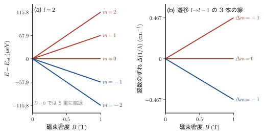
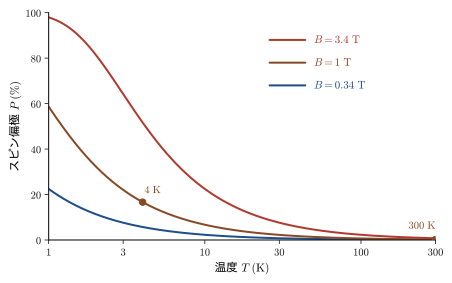

第23章スピン — 電子のもう一つの角運動量
鉄やコバルトが磁石になるのはなぜだろうか．原子の中の電子が原子核のまわりを回る運動（軌道運動）がつくる磁気で説明できそうに思えるが，実際には，鉄の磁石としての性質の大部分は電子の軌道運動ではなく，電子がもっているもう一つの角運動量——スピン（spin）——に由来する．しかもスピンは，前の 2 章で学んだ軌道角運動量とは違って，座標 $\bm{r}$ の関数ではなく，$\bm{r}\times\bm{p}$ という形にも書けない．この章では，スピンが「必要になった」歴史的な理由から出発して，スピンを数学的に扱う道具——$2\times2$ の行列，2 成分の列ベクトル，Pauli（パウリ）行列——を組み立てる．
話の順序は，実験事実 → 考え方 → 式 である．まず，円形電流が小さな磁石になるという電磁気学（AD 03「大学基礎物理学」）の知識から，電子の軌道運動がつくる磁気モーメント $\bm{\mu}=-\dfrac{e_0}{2m_{\mathrm{e}}}\bm{L}$ を導き，磁場の中で準位が $2l+1$ 本に分かれる Zeeman（ゼーマン）効果を説明する．次に，銀の原子線を不均一な磁場に通すと 2 本に分かれる Stern–Gerlach（シュテルン–ゲルラッハ）の実験を見る．軌道角運動量だけの理論では，分かれる本数は $2l+1$，つまり必ず奇数本であり，銀の基底状態（$l=0$）では 1 本のはずである．「2 本」という観測結果は，軌道とは別の，ちょうど 2 つの状態をもつ自由度を電子に与えなければ説明できない．これがスピンである．
スピン量子数は電子では $s=\tfrac12$ で，古典力学に対応物がない．「自転」の絵は Uhlenbeck（ウーレンベック）と Goudsmit（ハウトスミット）がスピンを思いついたときの手がかりだったが，本当に回転しているのではないことも，この章の数値（電子を古典的な球と見なすと表面速度が光速の約 170 倍になる）で確かめる．スピン量子数が半整数の粒子（電子・陽子・中性子）はFermi 粒子，整数の粒子（光子）はBose 粒子とよばれ，前者は Pauli の排他原理に従って原子の殻構造や金属の Fermi 準位をつくる．スピンの数学は驚くほど簡単で，$\hat{S}_x,\hat{S}_y,\hat{S}_z$ は $2\times2$ の行列，波動関数は $\bigl(\psi_+(\bm{r}),\ \psi_-(\bm{r})\bigr)^{\mathsf T}$ という 2 成分の列ベクトルになる．ここで作る道具は，一般の角運動量の代数（第24章），軌道とスピンの合成とスピン軌道相互作用（第25章，第26章），多電子原子（第VII部）へと続く土台になる．
- 円形電流の類推から，電子の軌道運動の磁気モーメント $\bm{\mu}=-\dfrac{e_0}{2m_{\mathrm{e}}}\bm{L}$ と Bohr 磁子 $\mu_{\mathrm B}=\dfrac{e_0\hbar}{2m_{\mathrm{e}}}$ を導き，Bohr 模型の水素で数値（電流 $1.05\ \mathrm{mA}$，中心の磁場 $12.5\ \mathrm{T}$）を確かめること
- Zeeman 効果 $E_{nlm}=E_{nl}+m\mu_{\mathrm B}B$ を導き，Stern–Gerlach の実験（軌道だけなら $2l+1$ 本，銀は $l=0$ で 1 本のはずが 2 本）から，スピンの必要性を論理的に説明できること
- スピン角運動量 $\hat{\bm{S}}$ を，軌道角運動量の類推で定義し，実験の 2 本から $2s+1=2$，すなわち $s=\tfrac12$，$m_s=\pm\tfrac12$，$\abs{\bm{S}}=\tfrac{\sqrt3}{2}\hbar$ を導けること．スピンが自転ではないことを数値で説明できること
- Fermi 粒子と Bose 粒子の違いと，複合粒子（$^3\mathrm{He}$ と $^4\mathrm{He}$ など）の統計を数え方で判定できること
- スピン変数 $\sigma$ とスピン関数 $\alpha$，$\beta$，2 成分の列ベクトル表示を使い，$\hat{S}^2,\hat{S}_z,\hat{S}_\pm,\hat{S}_x,\hat{S}_y$ の $2\times2$ 行列を導き，交換関係を行列の積で検算できること
- Pauli 行列 $\sigma_x,\sigma_y,\sigma_z$ の性質と積の規則 $\sigma_i\sigma_j=\delta_{ij}E+i\sum_k\varepsilon_{ijk}\sigma_k$，スピン軌道関数（2 成分スピノル）の確率解釈と $\hat{S}_\pm$ の作用を扱えること
- 磁場中の電子スピンのハミルトニアン $\hat{H}=\tfrac12 g_s\mu_{\mathrm B}\,\bm{\sigma}\cdot\bm{B}$ から，電子スピン共鳴（ESR）と核磁気共鳴（NMR）の共鳴条件，スピン偏極 $\tanh(\Delta E/2k_{\mathrm B}T)$，磁性材料の磁気モーメントを見積もれること
もとにしたノート：望月泰英『物理学ノート 量子力学3』 pp. 1–7．
23.1 軌道運動と磁気モーメント — 円形電流から Bohr 磁子へ
23.1.1 円形電流は小さな磁石である
電磁気学によれば，円形の導線に電流 $I$ を流すと，円の中心に磁場ができる．半径 $R$ の円形電流が真空中でその中心につくる磁束密度の大きさは $B=\dfrac{\mu_0I}{2R}$ である（$\mu_0$ は真空の透磁率．大学基礎物理学 第38章 38.4）．円から十分に離れた場所での磁場のようすは，小さな棒磁石がつくる磁場とそっくりである（38.6）．この「小さな棒磁石」の強さと向きを 1 つのベクトルで表したものが磁気双極子モーメント（magnetic dipole moment．以下，単に磁気モーメント）$\bm{\mu}$ である．面積 $\mathcal{A}$ の平らな輪に電流 $I$ が流れているとき，
\begin{equation} \bm{\mu}=I\,\mathcal{A}\,\bm{n} \label{eq:23-mu-def} \end{equation}と定める．$\bm{n}$ は，電流の向きに右ねじを回したときにねじが進む向きの単位ベクトルである．単位は $\mathrm{A\,m^2}=\mathrm{J/T}$ である．
記号：磁気モーメントは $\bm{\mu}$（$\mu_0$，$\mu_{\mathrm B}$ とは別）
大学基礎物理学（AD 03）では磁気双極子モーメントを $m$ と書いたが，量子力学では質量 $m$，磁気量子数 $m$ と紛れるので，本書では $\bm{\mu}$ と書く．真空の透磁率 $\mu_0$，この節で定義する Bohr 磁子 $\mu_{\mathrm B}$ とは，下付きの文字で区別する別の量である．
磁気モーメント $\bm{\mu}$ を磁束密度 $\bm{B}$ の中に置くと，方位磁針が北を向くのと同じように，$\bm{\mu}$ を $\bm{B}$ の向きにそろえようとするトルク $\bm{\tau}=\bm{\mu}\times\bm{B}$ がはたらく．トルクの大きさは $\mu B\sin\theta$（$\theta$ は $\bm{\mu}$ と $\bm{B}$ のなす角）だから，エネルギーの基準を $\theta=\pi/2$ にとり，そこから角 $\theta$ まで向きを変えるのに必要な仕事を積算すると，$U(\theta)=\displaystyle\int_{\pi/2}^{\theta}\mu B\sin\theta'\,\dd\theta'=-\mu B\cos\theta$ となる．これが磁気モーメントのポテンシャルエネルギー（位置エネルギー）
\begin{equation} U=-\bm{\mu}\cdot\bm{B}=-\mu B\cos\theta \label{eq:23-U} \end{equation}である．$\bm{\mu}$ が $\bm{B}$ に平行（$\theta=0$）のとき最低の $-\mu B$，反平行（$\theta=\pi$）のとき最高の $+\mu B$ になる．
さて，原子の中では電子が原子核のまわりを運動している．電子は電荷 $-e_0$ をもつ粒子だから，電子が軌道上を回ることは，小さな円形電流が流れることにほかならない．したがって，電子の軌道運動は磁気モーメントをもち，その向きは軌道の面に垂直になる（図23.1）．次の項で，この磁気モーメントを，量子力学でおなじみの軌道角運動量 $\bm{L}$ を使って表す．
23.1.2 軌道磁気モーメントと角運動量の関係
電子の質量を $m_{\mathrm{e}}$，電荷を $-e_0$ として，半径 $r$ の円軌道を速さ $v$ で回る電子を考える．次の 4 段階で磁気モーメントを求める．
導出 円軌道の軌道磁気モーメント
(1) 1 周にかかる時間（周期）は $T=\dfrac{2\pi r}{v}$ である．
(2) 電荷 $e_0$ の大きさの電気量が 1 周期に 1 回，軌道上の一点を通過するので，電流の大きさは
$$ I=\frac{e_0}{T}=\frac{e_0v}{2\pi r} $$である．電子は負電荷なので，電流の向き（正電荷が動く向き）は電子の運動の向きと逆である．
(3) 輪の面積は $\pi r^2$ だから，磁気モーメントの大きさは，式 \eqref{eq:23-mu-def} より
$$ \mu=I\cdot\pi r^2=\frac{e_0v}{2\pi r}\cdot\pi r^2=\frac{e_0\,r\,v}{2} $$である．
(4) 一方，軌道角運動量 $\bm{L}=\bm{r}\times\bm{p}$ は，円運動では大きさ $L=m_{\mathrm{e}}rv$（$\bm{r}\perp\bm{p}$ だから），向きは電子の運動の向きに右ねじを回したときにねじが進む向きである．(3) の結果の $rv$ を $L/m_{\mathrm{e}}$ で置き換えると $\mu=\dfrac{e_0}{2m_{\mathrm{e}}}L$ となる．電流の向きは電子の運動と逆なので，$\bm{\mu}$ は $\bm{L}$ と逆向きである．したがって，ベクトルとして
\begin{equation} \bm{\mu}=-\frac{e_0}{2m_{\mathrm{e}}}\,\bm{L} \label{eq:23-mu-L} \end{equation}を得る．
（導出終わり）
式 \eqref{eq:23-mu-L} は円軌道の場合に導いたが，軌道が円でなくても，中心力の下での一般の（楕円などの）閉じた周期軌道で成り立つ．実際，中心力の下では $\bm{L}$ が一定で，Kepler の第 2 法則（面積速度一定）と同じ関係 $\dfrac{\dd \mathcal{A}}{\dd t}=\dfrac{L}{2m_{\mathrm{e}}}$（単位時間に動径ベクトルが掃く面積）から，1 周期 $T$ の間に掃く面積は $\mathcal{A}=\dfrac{L}{2m_{\mathrm{e}}}T$ で，電流の平均値は $I=-e_0/T$（向きは運動と逆）だから，$\mu=I\mathcal{A}$ の大きさは $\dfrac{e_0}{T}\cdot\dfrac{LT}{2m_{\mathrm{e}}}=\dfrac{e_0L}{2m_{\mathrm{e}}}$ となり，周期 $T$ が消えて同じ結果になる（中心力でない力の下では $\bm{L}$ が時間とともに変わるが，1 周期にわたる時間平均の $\bm{L}$ について同じ関係が成り立つ）．比 $\bm{\mu}/\bm{L}=-e_0/(2m_{\mathrm{e}})$ は磁気回転比（gyromagnetic ratio）とよばれる．
量子力学では $\bm{L}$ を演算子 $\hat{\bm{L}}$ に置き換える．角運動量の大きさの単位は $\hbar$ だから，$\hat{\bm{L}}=\hbar\,(\hat{\bm{L}}/\hbar)$ と書いて，$\hbar$ の分をまとめて磁気モーメントの単位にすると便利である．そこで次の定義をおく．
定義23.1 Bohr 磁子
磁気モーメントの自然な単位として，
\begin{equation} \mu_{\mathrm{B}}\equiv\frac{e_0\hbar}{2m_{\mathrm{e}}}=9.274\,010\,078\times10^{-24}\ \mathrm{J/T}=5.788\,381\,806\times10^{-5}\ \mathrm{eV/T} \label{eq:23-muB} \end{equation}を Bohr 磁子（Bohr magneton）という．軌道角運動量の演算子 $\hat{\bm{L}}$ に対応する軌道磁気モーメントの演算子は，式 \eqref{eq:23-mu-L} より
\begin{equation} \hat{\bm{\mu}}_{\mathrm{orb}}=-\frac{e_0}{2m_{\mathrm{e}}}\hat{\bm{L}}=-\mu_{\mathrm{B}}\,\frac{\hat{\bm{L}}}{\hbar} \label{eq:23-muhat} \end{equation}である．
次元の確認：$e_0\hbar/m_{\mathrm{e}}$ の単位は $\mathrm{C\cdot J\,s/kg}=\mathrm{C\,m^2/s}=\mathrm{A\,m^2}$（$1\ \mathrm{J}=1\ \mathrm{kg\,m^2/s^2}$，$1\ \mathrm{C}=1\ \mathrm{A\,s}$）で，磁気モーメントの単位に一致する．また，$\hat{L}_z$ の固有値は $m\hbar$（$m=-l,\ldots,l$）だったから，軌道磁気モーメントの $z$ 成分の値は $-m\mu_{\mathrm{B}}$，つまり Bohr 磁子の整数倍である．
23.1.3 発展：磁場中の電子のハミルトニアン（量子力学的な導出）
磁場 $\bm{B}$ の中の電子の運動を，量子力学の側から見直してみよう．ここまでは「円形電流」という古典的な絵から出発したが，次のように，電荷をもつ粒子と磁場の結合（最小結合）から式 \eqref{eq:23-muhat} を確かめることができる．この項は，古典電磁気学で荷電粒子（電荷 $q$）のハミルトニアンが $H=(\bm{p}-q\bm{A})^2/2m+q\phi$ と書けること（大学基礎物理学 第38章 38.5 と 第58章 58.4 にベクトルポテンシャル $\bm{A}$ の説明がある）を認める読者向けの発展的な内容である．飛ばしても 23.2 節以降は読める．
導出 磁場中の電子のハミルトニアンと $\hat{\bm{L}}$ の項
電荷 $-e_0$ の粒子が磁場中を動くとき，運動量 $\hat{\bm{p}}$ は $\hat{\bm{p}}+e_0\bm{A}$ に置き換わる（$\bm{A}$ はベクトルポテンシャル．$\bm{B}=\nabla\times\bm{A}$）．一様な磁場 $\bm{B}$ には $\bm{A}=\tfrac12\bm{B}\times\bm{r}$ をとることができる．実際，$\bm{B}\times\bm{r}=(B_yz-B_zy,\ B_zx-B_xz,\ B_xy-B_yx)$ で，$\bm{B}$ は定数ベクトルだから，$x$ 成分は $\bigl[\nabla\times(\bm{B}\times\bm{r})\bigr]_x=\partial_y(B_xy-B_yx)-\partial_z(B_zx-B_xz)=B_x+B_x=2B_x$（$y$，$z$ 成分も同様）となって $\nabla\times\bigl(\tfrac12\bm{B}\times\bm{r}\bigr)=\bm{B}$ が確かめられ，$\nabla\cdot(\bm{B}\times\bm{r})=\partial_x(B_yz-B_zy)+\partial_y(B_zx-B_xz)+\partial_z(B_xy-B_yx)=0$ より $\nabla\cdot\bm{A}=0$（Coulomb ゲージ）も成り立つ．ハミルトニアンは，ポテンシャルエネルギーを $V(r)$ として
$$ \hat{H}=\frac{1}{2m_{\mathrm{e}}}\bigl(\hat{\bm{p}}+e_0\bm{A}\bigr)^2+V(r) =\frac{\hat{\bm{p}}^2}{2m_{\mathrm{e}}}+V(r)+\frac{e_0}{2m_{\mathrm{e}}}\bigl(\hat{\bm{p}}\cdot\bm{A}+\bm{A}\cdot\hat{\bm{p}}\bigr)+\frac{e_0^2}{2m_{\mathrm{e}}}\bm{A}^2 $$である．$\nabla\cdot\bm{A}=0$ なら $\hat{\bm{p}}\cdot\bm{A}\,\psi=-i\hbar(\nabla\cdot\bm{A})\psi+\bm{A}\cdot\hat{\bm{p}}\,\psi=\bm{A}\cdot\hat{\bm{p}}\,\psi$ だから，3 番目の項は $\dfrac{e_0}{m_{\mathrm{e}}}\bm{A}\cdot\hat{\bm{p}}$ になる．ここへ $\bm{A}=\tfrac12\bm{B}\times\bm{r}$ を代入し，スカラー三重積の巡回性 $(\bm{B}\times\bm{r})\cdot\hat{\bm{p}}=\bm{B}\cdot(\bm{r}\times\hat{\bm{p}})=\bm{B}\cdot\hat{\bm{L}}$ を使うと
$$ \frac{e_0}{m_{\mathrm{e}}}\bm{A}\cdot\hat{\bm{p}}=\frac{e_0}{2m_{\mathrm{e}}}\,\bm{B}\cdot\hat{\bm{L}} $$となる．したがって
\begin{equation} \hat{H}=\underbrace{\frac{\hat{\bm{p}}^2}{2m_{\mathrm{e}}}+V(r)}_{\hat{H}_0}+\frac{e_0}{2m_{\mathrm{e}}}\,\bm{B}\cdot\hat{\bm{L}}+\frac{e_0^2}{8m_{\mathrm{e}}}\,(\bm{B}\times\bm{r})^2 \label{eq:23-H-full} \end{equation}（最後の項は $\dfrac{e_0^2}{2m_{\mathrm{e}}}\bm{A}^2$ に $\bm{A}=\tfrac12\bm{B}\times\bm{r}$ を入れたもの）．第 2 項は，式 \eqref{eq:23-U} の $U=-\bm{\mu}\cdot\bm{B}$ に式 \eqref{eq:23-muhat} の $\hat{\bm{\mu}}_{\mathrm{orb}}$ を入れた
\begin{equation} \hat{H}_B=-\hat{\bm{\mu}}_{\mathrm{orb}}\cdot\bm{B}=\frac{\mu_{\mathrm{B}}}{\hbar}\,\bm{B}\cdot\hat{\bm{L}} \label{eq:23-HB} \end{equation}にほかならない．古典的な円形電流の議論と量子力学の最小結合が，同じ結果を与えた．
（導出終わり）
注意：$B$ の 2 乗の項（反磁性項）は 1 T ではきわめて小さい
式 \eqref{eq:23-H-full} の第 3 項は $B^2$ に比例する項（反磁性項）である．水素原子の $1s$ 状態で見積もると，$(\bm{B}\times\bm{r})^2=B^2(x^2+y^2)$ の期待値は $B^2\cdot\tfrac23\langle r^2\rangle=2B^2a_0^2$ なので第 3 項の大きさは $\dfrac{e_0^2B^2a_0^2}{4m_{\mathrm{e}}}$，これと第 2 項の大きさ $\mu_{\mathrm{B}}B=\dfrac{e_0\hbar B}{2m_{\mathrm{e}}}$ の比は $\dfrac{e_0Ba_0^2}{2\hbar}\approx2\times10^{-6}$（$B=1\ \mathrm{T}$）である．そこで，普通の実験室の磁場では第 3 項を無視し，第 2 項 $\hat{H}_B$ だけを考えればよい．
例題23.1 Bohr 模型の水素原子の電流・磁場・磁気モーメント
Bohr 模型の水素原子の基底状態（$n=1$）では，電子は半径 $a_0=5.29\times10^{-11}\ \mathrm{m}$ の円軌道を，角運動量 $L=\hbar$ で回っている．この電子を円形電流とみなす．(1) 電子の速さ $v$，周期 $T$，電流 $I$ を求めよ．(2) 核の位置（円の中心）での磁束密度の大きさ $B=\mu_0I/(2a_0)$ を求めよ．（$\mu_0=1.2566\times10^{-6}\ \mathrm{N/A^2}$）(3) 磁気モーメントの大きさ $\mu=I\cdot\pi a_0^2$ を求め，Bohr 磁子 $\mu_{\mathrm{B}}$ と比べよ．
解答 (1) $L=m_{\mathrm{e}}va_0=\hbar$ から，
$$ v=\frac{\hbar}{m_{\mathrm{e}}a_0}=\frac{1.0546\times10^{-34}\ \mathrm{J\,s}}{(9.109\times10^{-31}\ \mathrm{kg})(5.2918\times10^{-11}\ \mathrm{m})}=2.19\times10^{6}\ \mathrm{m/s} $$（光速の約 $0.73\ \%$，$v/c\approx1/137$ で，この値が微細構造定数である）．周期は
$$ T=\frac{2\pi a_0}{v}=\frac{2\pi(5.2918\times10^{-11}\ \mathrm{m})}{2.188\times10^{6}\ \mathrm{m/s}}=1.52\times10^{-16}\ \mathrm{s} $$で，電流は
$$ I=\frac{e_0}{T}=\frac{1.6022\times10^{-19}\ \mathrm{C}}{1.520\times10^{-16}\ \mathrm{s}}=1.05\times10^{-3}\ \mathrm{A}=1.05\ \mathrm{mA} $$である．原子 1 個の中を流れる電流が約 $1\ \mathrm{mA}$ という，豆電球なみの大きさになる．
(2) 円形電流の中心の磁束密度は
$$ B=\frac{\mu_0I}{2a_0}=\frac{(1.2566\times10^{-6}\ \mathrm{N/A^2})(1.054\times10^{-3}\ \mathrm{A})}{2\times5.2918\times10^{-11}\ \mathrm{m}}=12.5\ \mathrm{T} $$となる．実験室で作れる強い電磁石が数 T，MRI 装置の磁場が $1.5$〜$3\ \mathrm{T}$ 程度であるから，原子の内部にはそれを大きく超える磁場が「自前で」できていることになる．（Bohr 模型の $n=1$ 状態は量子力学の $1s$ 状態（$l=0$）とは異なり，$1s$ 電子は軌道磁場をつくらない．ここの数値は，原子内の電子の運動がつくる磁場の桁を知るための目安である．）
(3) 磁気モーメントの大きさは
$$ \mu=I\cdot\pi a_0^2=(1.054\times10^{-3}\ \mathrm{A})\,\pi\,(5.2918\times10^{-11}\ \mathrm{m})^2=9.27\times10^{-24}\ \mathrm{A\,m^2} $$で，$\mu_{\mathrm{B}}=9.274\times10^{-24}\ \mathrm{J/T}$ と一致する．これは偶然ではなく，式 \eqref{eq:23-mu-L} から $\mu=\dfrac{e_0}{2m_{\mathrm{e}}}L=\dfrac{e_0\hbar}{2m_{\mathrm{e}}}=\mu_{\mathrm{B}}$（$L=\hbar$）だからである．すなわち Bohr 磁子は，角運動量 $\hbar$ の軌道運動がつくる磁気モーメントである．
23.2 Zeeman 効果と Stern–Gerlach の実験 — 軌道だけでは説明できない「2 本」
23.2.1 Zeeman 効果 — 磁場の中で準位が分かれる
1896 年，Zeeman は，光を出している原子を強い磁場の中に置くと，スペクトル線が分かれる（当初は太くなって見えた）ことを発見した．これは，磁場が原子のエネルギー準位を変化させることの直接の証拠であり，Zeeman と Lorentz はこの業績で 1902 年の Nobel 物理学賞を共同で受けた．量子力学の言葉では，この現象は次のように定義される．
定義23.2 Zeeman 効果
磁場のない状態では $2l+1$ 重に縮退していたエネルギー準位が，磁場の中では $2l+1$ 個の（互いに異なる）エネルギー準位に分裂する効果を，Zeeman 効果（Zeeman effect）という．
この分裂は，前節で導いた $\hat{H}_B$（式 \eqref{eq:23-HB}）から，摂動論を使わずに，そのまま求められる．
導出 磁場中の水素様原子の準位
磁場 $\bm{B}=B\,\bm{e}_z$ を $z$ 方向にかけると，式 \eqref{eq:23-HB} より $\hat{H}_B=\dfrac{\mu_{\mathrm{B}}B}{\hbar}\,\hat{L}_z$ である（$B^2$ の項は無視する）．全ハミルトニアンは $\hat{H}=\hat{H}_0+\dfrac{\mu_{\mathrm{B}}B}{\hbar}\hat{L}_z$．ここで $\hat{H}_0$ は磁場のないときのハミルトニアン（中心力ポテンシャルの中の電子）で，その固有関数 $\psi_{nlm}=R_{nl}(r)\,Y_l^m(\theta,\varphi)$ は
$$ \hat{H}_0\psi_{nlm}=E_{nl}\psi_{nlm},\qquad \hat{L}_z\psi_{nlm}=m\hbar\,\psi_{nlm} $$を同時に満たす（第22章．$\hat{H}_0$ は球対称なので $\hat{L}_z$ と交換する）．したがって，$\hat{H}$ を $\psi_{nlm}$ に作用させると，
$$ \hat{H}\psi_{nlm}=E_{nl}\psi_{nlm}+\frac{\mu_{\mathrm{B}}B}{\hbar}\,m\hbar\,\psi_{nlm}=\bigl(E_{nl}+m\mu_{\mathrm{B}}B\bigr)\psi_{nlm} $$となり，$\psi_{nlm}$ は磁場中でもそのまま固有関数である．エネルギー固有値は
\begin{equation} E_{nlm}=E_{nl}+m\,\mu_{\mathrm{B}}B\qquad(m=-l,-l+1,\ldots,l) \label{eq:23-zeeman} \end{equation}である．
（導出終わり）
式 \eqref{eq:23-zeeman} の意味は，つぎのとおりである．磁場がないとき，$m$ の値によらず $E_{nl}$ で $2l+1$ 重に縮退していた準位が，磁場をかけると，$m$ の値ごとに間隔 $\mu_{\mathrm{B}}B$ の等間隔な $2l+1$ 本に分かれる（図23.2(a)は $l=2$ の場合：$m=2,1,0,-1,-2$ の 5 本）．$m=0$ の準位は動かず，$m\gt0$ の準位は上がり，$m\lt0$ の準位は下がる．軌道磁気モーメントの $z$ 成分は $-m\mu_{\mathrm{B}}$ だから，$m\gt0$ では $\bm{\mu}$ が $\bm{B}$ と反平行で式 \eqref{eq:23-U} のエネルギーが高く，$m\lt0$ では $\bm{\mu}$ が $\bm{B}$ に平行でエネルギーが低い，という物理的な描像とも合っている．分裂の大きさは，$B=1\ \mathrm{T}$ で $\mu_{\mathrm{B}}B=57.88\ \mu\mathrm{eV}$ と，原子の準位の間隔（数 $\mathrm{eV}$）の $10^{-5}$ 倍程度で，きわめて小さいが，分光器で十分に見える大きさである．

23.2.2 正常 Zeeman 効果 — Lorentz の三重線
Zeeman 効果は，スペクトル線の分裂として観測される．上の準位（$l_{\text{上}},m_{\text{上}}$）から下の準位（$l_{\text{下}},m_{\text{下}}$）に遷移するときに出る光子のエネルギーは，式 \eqref{eq:23-zeeman} より，
$$ h\nu=E_{\text{上}}-E_{\text{下}}=\Delta E_0+(m_{\text{上}}-m_{\text{下}})\,\mu_{\mathrm{B}}B $$である．ここで $\Delta E_0$ は磁場がないときの遷移エネルギーである．電気双極子放射（光の放出・吸収の最も普通の過程）では，磁気量子数の変化 $\Delta m=m_{\text{上}}-m_{\text{下}}$ は $0,\pm1$ のいずれかに限られる（この選択則は第IX部で導く．$Y_l^m$ の直交性から出る選択則は16.8 節で見た）．したがって，$l$ の値によらず，磁場中のスペクトル線は，もとの線の位置を中心に，$\pm\mu_{\mathrm{B}}B/h$ だけ離れた3 本になる．これを Lorentz の三重線（正常 Zeeman 効果）という．分裂の幅は，$\mu_{\mathrm{B}}/h=13.996\ \mathrm{GHz/T}$ である．
例題23.2 Cd の赤い線 $643.8\ \mathrm{nm}$ の正常 Zeeman 効果
カドミウム（Cd）の赤い線 $\lambda=643.8\ \mathrm{nm}$ は，$S=0$ の 2 つの準位の間の遷移（$5\,{}^1\mathrm{D}_2\to5\,{}^1\mathrm{P}_1$）で，電子スピンが正味の角運動量に寄与しないので，Lorentz の三重線が観測される．$B=1\ \mathrm{T}$ をかけたとき，(1) 三重線の隣り合う線のエネルギー間隔，(2) 波数（$\lambda^{-1}$）の間隔，(3) 波長の間隔 $\Delta\lambda$ を求めよ．(4) $\lambda=500\ \mathrm{nm}$ の線では $\Delta\lambda$ はいくらか．(5) これらを分けて見るには，分光器にどの程度の分解能 $\lambda/\Delta\lambda$ が必要か．
解答 (1) 隣り合う線の間隔は $\mu_{\mathrm{B}}B=(5.788\times10^{-5}\ \mathrm{eV/T})(1\ \mathrm{T})=5.79\times10^{-5}\ \mathrm{eV}=57.9\ \mu\mathrm{eV}$（周波数では $\mu_{\mathrm{B}}B/h=13.996\ \mathrm{GHz}$）．
(2) 波数の間隔は $\Delta(\lambda^{-1})=\dfrac{\mu_{\mathrm{B}}B}{hc}$．$hc=1239.842\ \mathrm{eV\,nm}=1.239842\times10^{-4}\ \mathrm{eV\,cm}$ を使って，
$$ \Delta(\lambda^{-1})=\frac{5.7884\times10^{-5}\ \mathrm{eV}}{1.239842\times10^{-4}\ \mathrm{eV\,cm}}=0.4669\ \mathrm{cm^{-1}}=46.69\ \mathrm{m^{-1}} $$(3) $\lambda^{-1}$ の微小変化と $\lambda$ の微小変化の関係 $\Delta(\lambda^{-1})=-\Delta\lambda/\lambda^2$ から，大きさは $\Delta\lambda=\lambda^2\,\Delta(\lambda^{-1})$：
$$ \Delta\lambda=(643.8\times10^{-9}\ \mathrm{m})^2\times46.69\ \mathrm{m^{-1}}=1.935\times10^{-11}\ \mathrm{m}=0.0194\ \mathrm{nm} $$(4) $\lambda=500\ \mathrm{nm}$ では $\Delta\lambda=(500\times10^{-9})^2\times46.69\ \mathrm{m}=1.167\times10^{-11}\ \mathrm{m}=0.0117\ \mathrm{nm}$．波長が短いほど，同じ磁場での波長のずれは小さい．
(5) $\lambda/\Delta\lambda=643.8/0.0194=3.3\times10^4$．したがって，分解能が $3\times10^4$ を超える分光器（Fabry–Perot 干渉計や高分解能の回折格子）と，$1\ \mathrm{T}$ 程度の強い磁場が必要である．Zeeman が 1896 年にスペクトル線の分裂を見つけたときにも，強い電磁石と大きな回折格子が使われた．
注意：三重線にならない原子が，むしろ普通である
実際の原子の大部分は，磁場中で三重線にならない．たとえばナトリウムの D 線は，弱い磁場で $\mathrm{D}_1$ が 4 本，$\mathrm{D}_2$ が 6 本に分かれる（異常 Zeeman 効果）．軌道角運動量だけの理論（式 \eqref{eq:23-zeeman}）では，線の数は $l$ によらず 3 本になってしまうので，これは軌道だけの理論では説明できない．電子スピンの存在が，この事実を説明する 3 つの大きな手がかり（Stern–Gerlach の 2 本，アルカリ原子のスペクトルの 2 重項，異常 Zeeman 効果）の 1 つになった．異常 Zeeman 効果は第26章で扱う．
23.2.3 Stern–Gerlach の実験
Zeeman 効果は「準位がどう分かれるか」を，光を通して間接的に見る実験だった．Stern と Gerlach は 1922 年，原子の磁気モーメントの向きが量子化されていること（当時の言葉で「空間量子化」）を，原子そのものの軌跡の分離として直接見せる実験を行った．
実験の装置と原理
装置は図23.3のとおりである．オーブンの中で銀（Ag）を加熱して蒸発させ，小さな穴とスリットを通して細い原子線をつくる（全体は真空中）．この原子線を，強い不均一な磁場の中に通し，その先に置いたスクリーン（冷たいガラス板）に原子を付着させて，付着した位置の分布を調べる．磁場を不均一にするために，磁極の一方はくさび形，もう一方は溝のある形にしてある．
不均一な磁場が必要な理由は，一様な磁場の中では磁気モーメントにトルク $\bm{\mu}\times\bm{B}$ がはたらくだけで，原子を引く力は生じないからである．力の式を導こう．磁気モーメント $\bm{\mu}$ の原子のポテンシャルエネルギーは式 \eqref{eq:23-U} の $U=-\bm{\mu}\cdot\bm{B}$ だから，力は $\bm{F}=-\nabla U=\nabla(\bm{\mu}\cdot\bm{B})$ である．磁場が主に $z$ 方向で，$B_z$ が $z$ とともに変化するときは，
\begin{equation} F_z=\mu_z\,\frac{\partial B_z}{\partial z} \label{eq:23-SG-force} \end{equation}となる．すなわち，原子は磁気モーメントの $z$ 成分 $\mu_z$ に比例した大きさの力で上（または下）に曲げられ，その曲がりの大きさを測れば $\mu_z$ がわかる．原子は電気的に中性でなければならない．荷電粒子（電子そのものなど）を使うと，Lorentz 力（大学基礎物理学 第39章 39.4）が磁気モーメントの効果よりはるかに大きくなって，実験が成り立たないからである．
予想と結果
原子磁気モーメントの向きについて，考えられる予想は次のとおりである．
- 古典論：原子の磁気モーメントの向きは，オーブンの中で無秩序に決まる．$\mu_z$ は $-\mu$ から $+\mu$ までの連続した値をとるので，スクリーンには上下に連続的に広がった 1 つの帯ができる．
- 軌道角運動量だけの量子論：$\mu_z=-m\mu_{\mathrm{B}}$（式 \eqref{eq:23-muhat}），$m=-l,\ldots,l$ の $2l+1$ 個の離散値をとるので，スクリーンの痕は $2l+1$ 本，すなわち必ず奇数本になる．$l=1$ なら 3 本，$l=2$ なら 5 本，$l=0$ なら 1 本（曲がらない）．
Stern と Gerlach が用いた銀原子は，最も外側の電子が $5s$ 軌道にある（電子配置 $[\mathrm{Kr}]\,4d^{10}5s^1$）．閉殻の $4d^{10}$ の電子の軌道角運動量は全体で打ち消し合って $0$ になり，残る 1 個の $5s$ 電子は $l=0$ である．すなわち，銀原子は軌道角運動量も軌道磁気モーメントももたないので，軌道だけの理論の予想は「原子線は曲がらず，痕は 1 か所」である．
ところが，観測された痕は，上下に分かれた2 本（同じ強さ）だった．
痕の本数を，古典論・軌道だけの量子論・観測で比べると表23.1 のようになる．
| 考え方 | 痕の本数 |
|---|---|
| 古典論（$\bm{\mu}$ の向きが連続） | 連続した 1 つの帯 |
| 軌道だけの量子論（一般に） | $2l+1$（奇数） |
| 銀原子（$5s$，$l=0$）の場合 | 1 |
| $l=1$ の原子（たとえば $p$ 電子が原子の磁気モーメントを担う場合） | 3（$m=1,0,-1$） |
| 観測（銀原子，水素原子） | 2 |
これらの痕のようすを図23.4 に描く．
考察：「2 本」は軌道角運動量では絶対に説明できない
観測された 2 本の意味を，論理として整理しよう．
- 軌道角運動量の量子数 $l$ が何であっても，$m$ の個数 $2l+1$ は奇数である．したがって軌道だけの理論から「2 本」は決して出ない（1 本，3 本，5 本，…のいずれか）．$l=1$ の原子で 3 本のはずが 2 本しか見えない，という言い方もできるが，これは銀原子の実際の状態（$l=0$）ではない．
- 銀原子は $l=0$ なので，軌道だけの理論では曲がらないはずなのに，現に曲がった．したがって，原子の中の電子は，軌道運動とは別の磁気モーメントを担う自由度をもっている．
- その自由度は，ちょうど2 通りの状態をとる．上下の痕の間隔（約 $0.2\ \mathrm{mm}$）は，$\abs{\mu_z}=\mu_{\mathrm{B}}$ と置いた見積り（例題23.3）とほぼ一致するので，2 つの状態の $\mu_z$ は約 $\mp\mu_{\mathrm{B}}$ である．
この「2 通りの状態をもつ新しい自由度」が，次節で導入するスピンである．なお，1922 年当時の Bohr–Sommerfeld の量子論の枠組みでは，この 2 本は，$l=1$ に相当する軌道の磁気量子数が $m=\pm1$ の 2 つの値をとる（$m=0$ は許されない）と解釈され，空間量子化の実証として受け取られたとされる．しかし，その後の量子力学では $m=0$ が許されて 3 本になり，また 1927 年には Phipps と Taylor が，基底状態が $l=0$ の水素原子でも原子線が 2 本に分かれることを示した．これは軌道角運動量で解釈することがまったくできない．
例題23.3 Stern–Gerlach 実験で原子線はどれだけ曲がるか
オーブンの温度を $T=1235\ \mathrm{K}$ とする．銀原子の質量は $m=107.87\ \mathrm{u}=1.791\times10^{-25}\ \mathrm{kg}$ である．磁場の勾配を $\partial B_z/\partial z=1.0\times10^{3}\ \mathrm{T/m}$（$=10\ \mathrm{T/cm}$），磁石の長さを $\ell=3.5\ \mathrm{cm}$ とし，原子の磁気モーメントの $z$ 成分の大きさを $\abs{\mu_z}=\mu_{\mathrm{B}}$ と仮定する．(1) 原子線の速さの目安として二乗平均速さ $v_{\mathrm{rms}}=\sqrt{4k_{\mathrm{B}}T/m}$ を求めよ（小さな穴から出てくる原子は，速いものほど単位時間に多く出るので，原子線の $\langle v^2\rangle$ は容器の中の気体の $3k_{\mathrm{B}}T/m$ ではなく $4k_{\mathrm{B}}T/m$ になる）．(2) 原子の加速度 $a$ を求めよ．(3) 磁石を通過する間の時間 $t=\ell/v_{\mathrm{rms}}$ と，磁石を出るときの上下方向のずれ $d=\tfrac12at^2$ を求め，2 本の痕の間隔を見積もれ．
解答 (1) $k_{\mathrm{B}}=1.3806\times10^{-23}\ \mathrm{J/K}$ を使って，
$$ v_{\mathrm{rms}}=\sqrt{\frac{4(1.3806\times10^{-23}\ \mathrm{J/K})(1235\ \mathrm{K})}{1.791\times10^{-25}\ \mathrm{kg}}}=\sqrt{3.808\times10^{5}\ \mathrm{m^2/s^2}}=617\ \mathrm{m/s} $$（気体の $\sqrt{3k_{\mathrm{B}}T/m}=534\ \mathrm{m/s}$ より約 $15\ \%$ 大きい）．
(2) 式 \eqref{eq:23-SG-force} より $F_z=\mu_z\,\partial B_z/\partial z$．大きさ $\abs{\mu_z}=\mu_{\mathrm{B}}=9.274\times10^{-24}\ \mathrm{J/T}$ で，
$$ a=\frac{F_z}{m}=\frac{(9.274\times10^{-24}\ \mathrm{J/T})(1.0\times10^{3}\ \mathrm{T/m})}{1.791\times10^{-25}\ \mathrm{kg}}=5.18\times10^{4}\ \mathrm{m/s^2} $$である（重力加速度の約 5300 倍）．
(3) 磁石の中を通る時間は $t=\dfrac{\ell}{v_{\mathrm{rms}}}=\dfrac{0.035\ \mathrm{m}}{617\ \mathrm{m/s}}=5.67\times10^{-5}\ \mathrm{s}$．この間の等加速度運動のずれは
$$ d=\frac12at^2=\frac12(5.18\times10^{4}\ \mathrm{m/s^2})(5.67\times10^{-5}\ \mathrm{s})^2=8.3\times10^{-5}\ \mathrm{m}=0.083\ \mathrm{mm} $$である．$\mu_z$ が正の原子は上へ，負の原子は下へ同じだけずれるので，2 本の痕は約 $2d=0.17\ \mathrm{mm}$ 離れる．この大きさは，光学顕微鏡で見分けられる程度であり，Stern–Gerlach の実験でも 2 本の痕は $0.2\ \mathrm{mm}$ 程度離れたと伝えられるので，$\abs{\mu_z}\approx\mu_{\mathrm{B}}$ という仮定と合う．ただし，原子線の速さには分布があり，速い原子ほど曲がりが小さいので，実際の痕は広がりをもつ．ここでの $v_{\mathrm{rms}}$ は代表値としての大まかな見積りで，$d$ には数十 % の不確かさがある．なお，軌道だけの理論の $l=0$ では $\mu_z=0$ なので $d=0$，原子線は曲がらない．
23.2.4 Uhlenbeck と Goudsmit のスピン仮説
軌道角運動量だけでは説明できない現象は，Stern–Gerlach の 2 本のほかにも，アルカリ原子のスペクトル線が二重線に分かれること（たとえばナトリウムの D 線），異常 Zeeman 効果など，多くあった．Pauli は 1924 年に，原子の中の電子が，古典的には記述できない「2 価性」をもつことを指摘した．そして 1925 年，Uhlenbeck と Goudsmit が，電子は固有の角運動量（大きさ $\hbar/2$）と，それに伴う磁気モーメントをもつと仮定した．地球が太陽のまわりを回りながら（公転）自分の軸のまわりでも回っている（自転）ように，電子も原子核のまわりを回りながら，自転しているというイメージである．この自転にあたる新しい角運動量をスピン（spin）とよぶ．スピンが上向きか下向きかの 2 通りの向きをもつと考えれば，Stern–Gerlach の 2 本を説明できる．
この状況をエネルギー準位の図に描くと，図23.5のようになる．軌道だけの理論では，$l=1$ の準位が磁場中で 3 本（$m=1,0,-1$）に分かれ，$l=0$ の準位との間の遷移も 3 本になる（図23.5(a)）．軌道だけなら $l=1$ は 3 本（奇数）だが，Stern–Gerlach の観測は 2 本なので，準位を分ける自由度はちょうど 2 つの値をもつものでなければならない．図23.5(b) は，この考え方を表す模式図であり，スペクトルの観測結果そのものを描いたものではない．
注意：図23.5(b) は「2 通り」を強調した模式図である
実在の原子のスペクトルでは，上の準位（$l=1$）も下の準位（$l=0$）も，電子スピンを含めて 2 倍の状態数（それぞれ 6 個と 2 個）に分かれる．図23.5(b) は，「電子のスピンの向きが 2 通りあるので，準位の分かれ方がそれに応じて 2 つになる」という考え方の骨格だけを描いたものである．線の数を正確に数えるには，軌道とスピンを合成した全角運動量（第25章）を使う．
23.3 スピン角運動量の導入
23.3.1 軌道角運動量とスピン角運動量
電子が原子核のまわりを公転（軌道運動）することによる角運動量を軌道角運動量（orbital angular momentum），電子が自転することによる角運動量をスピン角運動量（spin angular momentum）という．地球が太陽のまわりを公転しながら自分の軸のまわりで自転しているのと同じで，電子は原子核のまわりを回りながら，それとは別の角運動量をもっている，という絵である．ただし，この「自転」の絵は，スピンを思いつくための手がかりにすぎず，電子が本当に回転しているのではない．そのことは 23.3.5 節で数値を使って確かめる．
軌道角運動量の演算子 $\hat{\bm{L}}=\hat{\bm{r}}\times\hat{\bm{p}}$ の大きさは，球面調和関数の性質から $\sqrt{l(l+1)}\,\hbar$ で，量子数 $l$ と $m$ を使って
$$ \hat{L}^2\psi=l(l+1)\hbar^2\psi,\qquad \hat{L}_z\psi=m\hbar\,\psi $$と表された（第22章）．これに対して，スピン角運動量は，座標 $\bm{r}$ と運動量 $\bm{p}$ から作ることができない．そこで，上の関係式をヒントにして，スピン角運動量を次のように定義する．
23.3.2 スピン角運動量の定義
定義23.3 スピン角運動量演算子
スピン角運動量の演算子 $\hat{\bm{S}}=(\hat{S}_x,\hat{S}_y,\hat{S}_z)$ の大きさの 2 乗の演算子 $\hat{S}^2=\hat{S}_x^2+\hat{S}_y^2+\hat{S}_z^2$ を，軌道角運動量の類推で，
\begin{equation} \hat{S}^2\psi=s(s+1)\hbar^2\psi,\qquad \hat{S}_z\psi=m_s\hbar\,\psi \label{eq:23-S-def} \end{equation}を満たすものとして定義する．$s$ をスピン量子数（spin quantum number），$m_s$ をスピン磁気量子数という．
このように定義すると，軌道角運動量の演算子と同じ形の交換関係が成り立つことが予想できる：
\begin{equation} \comm{\hat{S}_x}{\hat{S}_y}=i\hbar\hat{S}_z,\quad \comm{\hat{S}_y}{\hat{S}_z}=i\hbar\hat{S}_x,\quad \comm{\hat{S}_z}{\hat{S}_x}=i\hbar\hat{S}_y \label{eq:23-S-comm} \end{equation} \begin{equation} \comm{\hat{S}^2}{\hat{S}_x}=0,\quad \comm{\hat{S}^2}{\hat{S}_y}=0,\quad \comm{\hat{S}^2}{\hat{S}_z}=0 \label{eq:23-S2-comm} \end{equation}（軌道角運動量では，これらは $\hat{\bm{r}}$ と $\hat{\bm{p}}$ の交換関係 $\comm{\hat{x}}{\hat{p}}=i\hbar$ から導かれた．21.3 節．スピンには $\hat{\bm{r}}$，$\hat{\bm{p}}$ がないので，ここでは予想であり，23.6 節で行列を作って実際に確かめる．）式 \eqref{eq:23-S2-comm} が成り立つから，$\hat{S}^2$ と $\hat{S}_z$ は同時に確定した値（$s(s+1)\hbar^2$ と $m_s\hbar$）をもつことができるが，式 \eqref{eq:23-S-comm} により $\hat{S}_x,\hat{S}_y,\hat{S}_z$ のうち 2 つ以上を同時に確定することはできない．
軌道角運動量とスピン角運動量の対応を表23.2 にまとめる．
| 軌道 | スピン | |
|---|---|---|
| 演算子 | $\hat{\bm{L}}=\hat{\bm{r}}\times\hat{\bm{p}}$ | $\hat{\bm{S}}$（$\hat{\bm{r}}$，$\hat{\bm{p}}$ からは作れない） |
| 量子数 | $l$（$0,1,2,\ldots$） | $s$（粒子の種類で決まる．$0,\tfrac12,1,\tfrac32,\ldots$） |
| 磁気量子数 | $m$（$m_l$ とも書く）$=-l,\ldots,l$ | $m_s=-s,\ldots,s$ |
| 大きさ | $\sqrt{l(l+1)}\,\hbar$ | $\sqrt{s(s+1)}\,\hbar$ |
| $z$ 成分 | $m\hbar$ | $m_s\hbar$ |
| 状態の数 | $2l+1$ | $2s+1$ |
スピン量子数 $s$ は，軌道の $l$ と違って，粒子の種類ごとに決まった値をもつ（電子はいつでも $s=\tfrac12$）．$l$ は電子の運動状態によって変わるが，$s$ は質量や電荷と同じ，粒子の固有の性質である．
注意：式 \eqref{eq:23-S-def} は厳密な定義ではない
ここでの導入には，2 つの意味で「厳密でない」ところがある．(1) $\hat{\bm{L}}$ は波動関数 $\psi(\bm{r})$ に微分演算子として作用したが，$\hat{\bm{S}}$ は座標 $\bm{r}$ の関数に作用する微分演算子ではなく，23.5 節で導入するスピン変数 $\sigma$ の関数に作用する，別種の演算子である．(2) 厳密には，$\hat{S}_x,\hat{S}_y,\hat{S}_z$ を交換関係 \eqref{eq:23-S-comm} を満たすエルミート演算子として定義し，そこから $s$ が $0,\tfrac12,1,\tfrac32,\ldots$ のいずれかで，$m_s=-s,-s+1,\ldots,s$ となることを導く（第24章）．本章では，軌道角運動量の類推で式 \eqref{eq:23-S-def} を仮定し，実験（Stern–Gerlach の 2 本）から $s=\tfrac12$ を決め，行列を作り，最後に交換関係が確かに成り立つことを確かめる，という順に進める．
23.3.3 電子のスピン — $s=\tfrac12$
原子の中の電子のスピンは，Stern–Gerlach の実験（磁場中で 2 本）が示すとおり，上向き ↑ と下向き ↓ の 2 通りしかない．また，周期表の殻の構造を見ても，1 つの軌道（$n,l,m$ が決まった状態）には電子が 2 個まで入る（この事実は 23.4.3 節の Pauli の排他原理と結び付く）．すなわち，電子のスピンの状態の数（縮退度）は 2 である．軌道角運動量では，$m$ が $-l$ から $l$ までの整数値をとるので状態の数は $2l+1$ だった．スピンでも同じ数え方が成り立つ（$m_s=-s,\ldots,s$ で $2s+1$ 個，第24章で示す）と考えると，
$$ 2s+1=2\qquad\therefore\quad s=\frac12 $$である（$s=1$ なら $2s+1=3$ 個，$s=\tfrac32$ なら 4 個の状態になるので，状態がちょうど 2 つになるのは $s=\tfrac12$ だけである）．よって電子のスピン（方位）量子数は $s=\tfrac12$ で，スピン磁気量子数は $m_s=\pm\tfrac12$ となる．軌道角運動量の量子数 $l$ は整数に限られた（球面調和関数が $\varphi$ の 1 周で元に戻る，という条件による．第22章）ので，半整数の $s=\tfrac12$ は軌道にはない，スピンだけがもつ値である．
スピン角運動量の大きさと $z$ 成分は，式 \eqref{eq:23-S-def} から，
\begin{equation} \abs{\bm{S}}=\sqrt{s(s+1)}\,\hbar=\sqrt{\frac12\left(\frac12+1\right)}\,\hbar=\frac{\sqrt3}{2}\hbar\approx0.866\,\hbar,\qquad S_z=\pm\frac12\hbar \label{eq:23-S-size} \end{equation}である．スピンの大きさ $\tfrac{\sqrt3}{2}\hbar$ は $z$ 成分の最大値 $\tfrac12\hbar$ よりも大きい．これは軌道角運動量（$\sqrt{l(l+1)}\hbar>l\hbar$）と同じで，角運動量ベクトルを $z$ 軸に完全には向けられないこと（$S_x,S_y$ も同時には確定できないこと）の表れである．ベクトル模型では，スピンは $z$ 軸から $\arccos\bigl(\tfrac{1/2}{\sqrt3/2}\bigr)=\arccos\tfrac{1}{\sqrt3}=54.74^\circ$ の方向に，円錐の面に沿って向いていると描く（図23.6）．
定義23.4 $\alpha$ 電子と $\beta$ 電子
$S_z=+\dfrac{\hbar}{2}$（$m_s=+\tfrac12$）の電子を $\alpha$ 電子，$S_z=-\dfrac{\hbar}{2}$（$m_s=-\tfrac12$）の電子を $\beta$ 電子という．状態の名前としては，スピン関数 $\alpha,\beta$（23.5 節）や，Dirac 記法の $\ket{\uparrow}$，$\ket{\downarrow}$ とも書き，$\alpha=\ket{\uparrow}$，$\beta=\ket{\downarrow}$ が対応する．
スピンの向きを上向き ↑，下向き ↓ の矢印で描くときは，↑ が $S_z=+\hbar/2$（$\alpha$ 電子），↓ が $S_z=-\hbar/2$（$\beta$ 電子）を表す．本書ではこの約束を全巻で使う（23.3.6 節で，磁気モーメントの向きとの関係を注意する）．
例題23.4 スピン 1/2 の角運動量ベクトルと $z$ 軸のなす角
電子のスピン角運動量ベクトルについて，(1) $\alpha$ 電子と $\beta$ 電子の $\bm{S}$ が $z$ 軸となす角 $\theta_\alpha,\theta_\beta$，(2) $S_x^2+S_y^2$ の値（$\hat{S}^2-\hat{S}_z^2$ の固有値）と，$\bm{S}$ の $xy$ 面内の成分の大きさを求めよ．
解答 (1) ベクトル $\bm{S}$ と $z$ 軸のなす角 $\theta$ は，$\cos\theta=S_z/\abs{\bm{S}}$ で決まる．式 \eqref{eq:23-S-size} より，$\alpha$ 電子では
$$ \cos\theta_\alpha=\frac{\hbar/2}{(\sqrt3/2)\hbar}=\frac{1}{\sqrt3}=0.5774\qquad\therefore\quad\theta_\alpha=54.74^\circ $$$\beta$ 電子では $\cos\theta_\beta=-1/\sqrt3$ なので $\theta_\beta=180^\circ-54.74^\circ=125.26^\circ$．いずれも $0^\circ$ や $180^\circ$ にならない．
(2) $\hat{S}^2=\hat{S}_x^2+\hat{S}_y^2+\hat{S}_z^2$ の固有値は $\tfrac34\hbar^2$，$\hat{S}_z^2$ の固有値は $\left(\pm\tfrac12\hbar\right)^2=\tfrac14\hbar^2$ だから，$\alpha$，$\beta$ のどちらでも，
$$ S_x^2+S_y^2=\frac34\hbar^2-\frac14\hbar^2=\frac12\hbar^2 $$である（$\hat{S}_z$ の固有状態では $\hat{S}_x^2+\hat{S}_y^2$ も確定した値をとる）．$xy$ 面内の成分の大きさは $\sqrt{\tfrac12}\hbar=\hbar/\sqrt2=0.707\hbar$ で，$\abs{\bm{S}}\sin\theta=\tfrac{\sqrt3}{2}\hbar\cdot\sqrt{1-\tfrac13}=\tfrac{\sqrt3}{2}\cdot\tfrac{\sqrt2}{\sqrt3}\hbar=\tfrac{\hbar}{\sqrt2}$ とも一致する．このように，$\bm{S}$ のうち $z$ 成分は $\pm\hbar/2$ に決まるが，横の成分 $S_x,S_y$ の個々の値は決まらず，二乗和だけが決まっている．
23.3.4 いろいろな粒子のスピン量子数
スピン量子数 $s$ は粒子の種類ごとに決まっている．代表的なものを表23.3にまとめる．
| $s$ | 粒子 | $m_s$ の値 |
|---|---|---|
| $\tfrac12$ | 電子，陽子，中性子（ほかにミュー粒子，ニュートリノ，クォーク） | $\pm\tfrac12$ |
| $1$ | 光子（ほかにグルーオン，$\mathrm{W}$ 粒子，$\mathrm{Z}$ 粒子） | 光子は $\pm1$ の 2 つだけ（下の説明）．質量をもつ $\mathrm{W}$，$\mathrm{Z}$ 粒子は $-1,0,+1$ の 3 つ |
| $0$ | $\pi$ 中間子，Higgs 粒子，$^4\mathrm{He}$ の原子核 | $0$ |
陽子と中性子は，それぞれ 3 個のクォークからできた複合粒子であるが，全体としてスピン $\tfrac12$ の粒子として振る舞う．光子（光の粒）のスピン量子数は $s=1$ である．$s=1$ なら $m_s=-1,0,+1$ の 3 つの状態があるはずだが，質量のない粒子である光子では，光の電場が進行方向に垂直な向きにしか振動しない（横波である）ので，進行方向に電場が振動する状態（$m_s=0$ に対応する状態）は存在せず，$m_s=\pm1$（右回りと左回りの円偏光）の 2 つだけが実現する．これが，光の偏光の自由度が 2 つである理由である．これに対して，質量をもつ $\mathrm{W}$ 粒子や $\mathrm{Z}$ 粒子は，$s=1$ で $m_s=-1,0,+1$ の 3 つの状態をとる．
イメージ：「自転の速さ」で考えるスピンの大きさ
スピン量子数 $s$ が大きな粒子ほど，スピン角運動量 $\sqrt{s(s+1)}\,\hbar$ は大きい．電子（$s=\tfrac12$，$0.87\,\hbar$）を「ゆっくり自転している」，光子（$s=1$，$\sqrt2\,\hbar=1.41\,\hbar$）を「速く自転している」と例えるイメージは，角運動量の大きさの目安を覚えるには役に立つ．しかし，これは比喩にすぎない．次に見るように，スピンは実際の回転ではない．
23.3.5 スピンは本当の自転ではない
ここで，「自転」という絵をまじめに受け取るとどうなるかを，数値で調べておこう．
例題23.5 電子のスピンを自転とみなすと
電子を，半径が古典電子半径 $r_{\mathrm{e}}=\dfrac{e_0^2}{4\pi\varepsilon_0m_{\mathrm{e}}c^2}=2.82\ \mathrm{fm}$（$1\ \mathrm{fm}=10^{-15}\ \mathrm{m}$）の一様な剛体の球とみなし，角運動量 $S_z=\hbar/2$ で自転しているとする．(1) 球の慣性モーメント $I=\tfrac25m_{\mathrm{e}}r_{\mathrm{e}}^2$，(2) 角速度 $\omega=(\hbar/2)/I$，(3) 赤道上の表面速度 $v=\omega r_{\mathrm{e}}$ を求め，光速 $c$ と比べよ．(4) 表面速度が $c$ 以下になるためには，電子の半径はどれだけ以上でなければならないか．
解答 (1) $I=\dfrac25(9.109\times10^{-31}\ \mathrm{kg})(2.818\times10^{-15}\ \mathrm{m})^2=2.89\times10^{-60}\ \mathrm{kg\,m^2}$．
(2) $\omega=\dfrac{\hbar/2}{I}=\dfrac{5.273\times10^{-35}\ \mathrm{J\,s}}{2.893\times10^{-60}\ \mathrm{kg\,m^2}}=1.82\times10^{25}\ \mathrm{rad/s}$．
(3) $v=\omega r_{\mathrm{e}}=(1.822\times10^{25}\ \mathrm{s^{-1}})(2.818\times10^{-15}\ \mathrm{m})=5.1\times10^{10}\ \mathrm{m/s}$．光速 $c=3.00\times10^8\ \mathrm{m/s}$ の $v/c=171$ 倍である．特殊相対性理論では，質量をもつ物体は光速を超えられないから，この描像は不可能である（大きさ $\abs{\bm{S}}=\tfrac{\sqrt3}{2}\hbar$ の角運動量を使うと $297\,c$ になる）．
(4) 同じ角運動量 $\hbar/2$ で，半径が $r$ の球なら，$I\propto r^2$ より $v=\omega r=\dfrac{\hbar/2}{(2/5)m_{\mathrm{e}}r}\propto\dfrac1r$．$v\le c$ には半径を $171$ 倍，すなわち $r\ge171\,r_{\mathrm{e}}=4.8\times10^{-13}\ \mathrm{m}$ にしなければならない．これは原子核の大きさ（$10^{-15}$〜$10^{-14}\ \mathrm{m}$）よりも大きく，電子の散乱などの実験が示す電子の大きさ（内部構造は見つかっておらず，点粒子として扱われる）とは，まったく合わない．
したがって，スピンは物体の「自転」ではなく，粒子が質量や電荷と同じようにもっている固有の（内部の）角運動量と考えなければならない．この困難は，スピンが提案された当時から知られていた．スピンは，相対論的な電子の方程式である Dirac 方程式（第XI部）から，自然に導かれる．電子のスピンがもつ奇妙な性質の 1 つは，$360^\circ$（$2\pi$）回転させても状態が元に戻らず符号が $-1$ 倍になり，$720^\circ$（$4\pi$）回転させて初めて元に戻る，ということである（中性子干渉計で実験的に確かめられている．リー群シミュレーター ②で，スピノルの位相が $4\pi$ 周期で戻るようすを見ることができる）．
23.3.6 スピンの磁気モーメントと $g$ 因子
電子は電荷をもつから，スピンにも磁気モーメントが伴う．軌道の場合の式 \eqref{eq:23-muhat} に対応して，電子のスピン磁気モーメントの演算子は
\begin{equation} \hat{\bm{\mu}}_s=-g_s\,\mu_{\mathrm{B}}\,\frac{\hat{\bm{S}}}{\hbar},\qquad g_s\approx2.0023 \label{eq:23-mu-spin} \end{equation}と書かれる．$g_s$ は電子スピンの $g$ 因子である．軌道の場合は係数が $g_l=1$（式 \eqref{eq:23-muhat}）だったが，スピンでは約 2 倍の値になる．Dirac 方程式は $g_s=2$ を与え（第XI部），量子電磁力学の補正を入れると $g_s=2.002\,319\ldots$ となる（最初の補正は $\alpha/(2\pi)\approx0.00116$ で，$g_s/2=1+\alpha/2\pi+\cdots$）．この値は，物理学の中で最も精密に測定・計算が一致している値の 1 つである．$g_s\approx2$ を使うと，$z$ 成分は
$$ \mu_{s,z}=-g_s\mu_{\mathrm{B}}m_s=\mp\frac{g_s}{2}\mu_{\mathrm{B}}\approx\mp\mu_{\mathrm{B}}\qquad(m_s=\pm\tfrac12) $$となり，スピン 1 個の磁気モーメントの $z$ 成分は約 $1$ Bohr 磁子である．例題23.3 で $\abs{\mu_z}=\mu_{\mathrm{B}}$ と置いて 2 本の痕の間隔を見積もったが，これは実験と合う．
注意：↑ はスピンの向きで，磁気モーメントは逆向き
本書で ↑ と書くときは，スピンの $z$ 成分が $+\hbar/2$（$m_s=+\tfrac12$，$\alpha$ 電子）であることを表す．式 \eqref{eq:23-mu-spin} の負号のために，電子では磁気モーメントはスピンと逆向きになる．↑ の電子の磁気モーメントの $z$ 成分は $-\tfrac{g_s}{2}\mu_{\mathrm{B}}$（下向き）で，磁場 $\bm{B}=B\bm{e}_z$ の中でのエネルギーは $-\mu_zB=+\tfrac{g_s}{2}\mu_{\mathrm{B}}B$ と，$\downarrow$ よりも高い．大学基礎物理学（第51章 51.4）で $E_\uparrow=-\mu B$ と書いたときの ↑ は「磁気モーメントが磁場に平行」という意味で，本書の「スピンが上向き」とは別の約束である．混同しないこと．
23.4 Fermi 粒子と Bose 粒子
23.4.1 Fermi 粒子と Bose 粒子
定義23.5 Fermi 粒子と Bose 粒子
スピン量子数 $s$ が半整数値（$\tfrac12,\tfrac32,\ldots$）である粒子をFermi 粒子（fermion），スピン量子数 $s$ が整数値（$0,1,2,\ldots$）である粒子をBose 粒子（boson）という．
名前は，それぞれの粒子の統計（同じ種類の粒子をたくさん集めたときの振る舞い）を明らかにした Fermi と Bose にちなんでいる．統計の違いは 23.4.3 節で述べる．電子・陽子・中性子は $s=\tfrac12$ なので Fermi 粒子，光子は $s=1$ なので Bose 粒子である（表23.3）．
23.4.2 物質をつくる粒子と力を伝える粒子
現代の素粒子物理学でわかっていることとして，次の対応がある．
- Fermi 粒子 ＝ 物質をつくっている基本粒子：クォーク（陽子や中性子の材料）と，電子・ミュー粒子・タウ粒子・ニュートリノなどのレプトン．すべて $s=\tfrac12$．
- Bose 粒子 ＝ 粒子どうしの間に力を伝える基本粒子：光子（電磁力），グルーオン（強い力），$\mathrm{W}$ 粒子と $\mathrm{Z}$ 粒子（弱い力）．これらはすべて $s=1$ である．
基本粒子の中には，もう 1 つ，スカラー粒子の Higgs 粒子（$s=0$，Bose 粒子）がある．これは粒子に質量を与える仕組みにかかわる粒子であり，力を伝える粒子ではない．また，重力を伝える粒子（重力子）は，存在するならば $s=2$ の Bose 粒子と考えられているが，まだ観測されていない．
基本粒子の分類を図23.7 に示す．
23.4.3 Fermi 粒子と Bose 粒子の振る舞い
Fermi 粒子と Bose 粒子は，同じ種類の粒子を複数個集めたとき，まったく違う振る舞いをする．
- Fermi 粒子は Pauli の排他原理に従い，同じ種類の粒子どうしが同じ量子状態（軌道とスピンを合わせた状態）に 2 個以上は入れない．原子の中の電子が，$1s$ 軌道に $\uparrow\downarrow$ の 2 個まで，$2s$ にも 2 個，$2p$ に 6 個…と積み重なって殻構造ができること，金属の伝導電子が Fermi 準位（大学基礎物理学 第52章 52.8）まで詰まっていることは，電子が Fermi 粒子であることの結果である．
- Bose 粒子は，同じ量子状態に何個でも入ることができ，低温では最低のエネルギー状態に集中する（Bose–アインシュタイン凝縮，52.10）．レーザー光が，同じ状態にある大量の光子でできているのはその例である．
数学的には，同種の粒子を入れ替えたとき，Fermi 粒子の波動関数は符号が変わり（反対称），Bose 粒子の波動関数は変わらない（対称）ことで表される．これは第VII部（多電子系）で Slater 行列式として扱う．また，スピンが整数か半整数かで統計が決まる（スピンと統計の関係）ことは，相対論的な場の量子論で Pauli が 1940 年に証明した事実であり，通常の量子力学の枠内では導けない．統計の詳しい扱いは，大学基礎物理学 第52章 52.4にもある．
23.4.4 複合粒子の統計
原子や原子核のような複合粒子も，全体として Fermi 粒子か Bose 粒子のどちらかになる．同じ種類の複合粒子 2 個を入れ替えると，それぞれに含まれる $N_{\mathrm f}$ 個の Fermi 粒子が 1 個ずつ入れ替わる．Fermi 粒子 1 組の入れ替えごとに符号が $-1$ 倍になるから，全体の符号は $(-1)^{N_{\mathrm f}}$ である（Bose 粒子の入れ替えは符号を変えない）．したがって，
- 含まれる Fermi 粒子の数 $N_{\mathrm f}$ が奇数 ⟹ 複合粒子は Fermi 粒子（スピンは半整数）
- $N_{\mathrm f}$ が偶数 ⟹ 複合粒子は Bose 粒子（スピンは整数）
となる．
例題23.6 同位体の統計 — $^3\mathrm{He}$ と $^4\mathrm{He}$，$^6\mathrm{Li}$ と $^7\mathrm{Li}$，$^{87}\mathrm{Rb}$
中性の原子 $^{A}_{Z}\mathrm{X}$ は，$Z$ 個の陽子，$N=A-Z$ 個の中性子，$Z$ 個の電子でできている．(1) $^3\mathrm{He}$，$^4\mathrm{He}$，$^6\mathrm{Li}$，$^7\mathrm{Li}$，$^{87}\mathrm{Rb}$ はそれぞれ Fermi 粒子か Bose 粒子か．(2) 一般に，中性原子の統計は何で決まるか．
解答 陽子・中性子・電子はすべて $s=\tfrac12$ の Fermi 粒子（陽子と中性子は，その内部のクォークまで数えても，クォークの個数が 3 個ずつで奇数だから，1 個ずつ数えて同じ結果になる）．Fermi 粒子の総数は $N_{\mathrm f}=Z+N+Z=A+Z$ である．
| 原子 | $Z$ | $N$ | $N_{\mathrm f}=2Z+N$ | 統計 |
|---|---|---|---|---|
| $^3\mathrm{He}$ | 2 | 1 | 5 | Fermi 粒子 |
| $^4\mathrm{He}$ | 2 | 2 | 6 | Bose 粒子 |
| $^6\mathrm{Li}$ | 3 | 3 | 9 | Fermi 粒子 |
| $^7\mathrm{Li}$ | 3 | 4 | 10 | Bose 粒子 |
| $^{87}\mathrm{Rb}$ | 37 | 50 | 124 | Bose 粒子 |
(2) $N_{\mathrm f}=2Z+N$ で，$2Z$ は常に偶数だから，$N_{\mathrm f}$ の偶奇は $N$ の偶奇と同じである．したがって中性原子は，中性子の数 $N$ が奇数なら Fermi 粒子，偶数なら Bose 粒子である（原子の質量数 $A=Z+N$ の偶奇ではないことに注意．たとえば $^{87}\mathrm{Rb}$ は $A$ が奇数だが Bose 粒子）．
応用：$^4\mathrm{He}$ の超流動と $^{87}\mathrm{Rb}$ の凝縮，そして超伝導
Bose 粒子の $^4\mathrm{He}$ は，約 $2.17\ \mathrm{K}$ 以下で粘性のない超流動になる．Fermi 粒子の $^3\mathrm{He}$ は，そのままでは超流動にならず，約 $1\ \mathrm{mK}$（高圧下では約 $2.5\ \mathrm{mK}$）という $^4\mathrm{He}$ の千分の 1 前後の低温まで冷やして，2 個の原子が対（Cooper 対のようなもの）をつくって初めて超流動になる．Bose 粒子の $^{87}\mathrm{Rb}$ の原子気体では，1995 年に Bose–アインシュタイン凝縮が実現した．金属の超伝導も同じ仕組みで，Fermi 粒子の電子が 2 個ずつ対（Cooper 対）をつくると，全体としてスピンが整数の（$0$ または $1$）Bose 粒子のように振る舞い，低温で凝縮する（Cooper 対シミュレーター）．これらの違いは，すべて粒子のスピン量子数が半整数か整数かに由来する．
23.5 スピン座標とスピン関数
23.5.1 スピン変数 $\sigma$ — 波動関数の新しい変数
今までは電子のスピンを考えなかったので，波動関数の変数は位置 $x,y,z$（と時間 $t$）だけだった．電子がスピンをもつ以上，スピンの状態を指定する変数が必要になる．そこで新たに，スピン変数（スピン座標）$\sigma$ を導入する．$\sigma$ はスピンの $z$ 成分を $S_z=\sigma\hbar$ と表す量，すなわちスピン磁気量子数 $m_s$ の値をとる変数で，電子では $\sigma=+\tfrac12$ と $\sigma=-\tfrac12$ の 2 つの値だけをとる．スピンまで含めた波動関数は $\psi(x,y,z,\sigma)$ である（時間を含めるなら $\Psi(x,y,z,\sigma,t)$）．
注意：$\sigma$ の二重使用（スピン変数と Pauli 行列）
この節のスピン変数 $\sigma$（値は $\pm\tfrac12$）と，23.7 節で導入する Pauli 行列 $\sigma_x,\sigma_y,\sigma_z$ は，まったく別のものである．Pauli 行列はいつでも添字 $x,y,z$ を付けて書くので，添字のない $\sigma$ はスピン変数である．
$\psi(x,y,z,\sigma)$ の意味は，位置 $(x,y,z)$ の周りの微小な体積 $\dd x\,\dd y\,\dd z$ の中に，スピンの $z$ 成分が $\sigma\hbar$ である状態で電子を見いだす確率が $\abs{\psi(x,y,z,\sigma)}^2\dd x\,\dd y\,\dd z$ である，ということである．$\sigma$ の値は 2 つしかないので，$\psi(x,y,z,\sigma)$ は，「上向きスピンの成分」$\psi\bigl(x,y,z,\tfrac12\bigr)$ と「下向きスピンの成分」$\psi\bigl(x,y,z,-\tfrac12\bigr)$ という $\bm{r}$ の 2 つの関数の組だと考えてもよい．
最も簡単な場合は，空間部分とスピン部分の積の形である：
$$ \psi(x,y,z)\,\alpha(\sigma),\qquad \psi(x,y,z)\,\beta(\sigma) $$ここで $\alpha(\sigma)$，$\beta(\sigma)$ はスピン波動関数（スピン関数）で，次の項で定める．一般の状態は，この 2 つの型の和で書ける（23.8 節）．
23.5.2 規格化条件
スピンを含めた確率の総和が 1 になるように，規格化条件は $\bm{r}$ についての積分と，スピン変数 $\sigma$ についての和をとって書かれる：
\begin{equation} \sum_{\sigma=\pm1/2}\int\abs{\psi(x,y,z,\sigma)}^2\dd x\,\dd y\,\dd z=1 \label{eq:23-norm-spin} \end{equation}$\sigma$ は 2 つの値しかとらない離散的な変数なので，積分ではなく和になる．電子については，和を書き下すと次のようになる：
\begin{equation} \int\abs{\psi\!\left(x,y,z,\tfrac12\right)}^2\dd x\,\dd y\,\dd z+\int\abs{\psi\!\left(x,y,z,-\tfrac12\right)}^2\dd x\,\dd y\,\dd z=1 \label{eq:23-norm-spin2} \end{equation}第 1 項は「電子が上向きスピンで見いだされる確率」，第 2 項は「下向きスピンで見いだされる確率」で，両者の和が 1 である．
23.5.3 スピン関数 $\alpha$，$\beta$ と列ベクトル
スピン角運動量の固有関数を求めよう．軌道角運動量と対比して，$\hat{S}^2\psi=s(s+1)\hbar^2\psi$，$\hat{S}_z\psi=m_s\hbar\,\psi$ という形の関係式（式 \eqref{eq:23-S-def}）を，スピン変数だけの関数 $\gamma(\sigma)$（一般のスピン関数）に対して要請する（記号 $\chi$ は第VII部でスピン軌道に使うので，スピン関数には $\gamma$ を使う．23.9.3 節の磁気回転比 $\gamma_{\mathrm p}$ とは別の量である）：
$$ \hat{S}^2\gamma(\sigma)=s(s+1)\hbar^2\gamma(\sigma),\qquad \hat{S}_z\gamma(\sigma)=m_s\hbar\,\gamma(\sigma) $$ここで，$m_s=+\tfrac12$ に対応するスピン関数を $\alpha(\sigma)$，$m_s=-\tfrac12$ に対応するスピン関数を $\beta(\sigma)$ とする．すなわち
\begin{equation} \hat{S}_z\alpha=\frac12\hbar\,\alpha,\qquad \hat{S}_z\beta=-\frac12\hbar\,\beta \label{eq:23-Sz-ab} \end{equation}である．$\alpha$ と $\beta$ の具体的な値は，次のように決まる．スピン変数 $\sigma$ の関数の空間では，$\hat{S}_z$ は「$\sigma\hbar$ を掛ける」という演算子として働く（位置表示で $\hat{x}$ が「$x$ を掛ける」演算子であるのと同じ）：$(\hat{S}_z\gamma)(\sigma)=\sigma\hbar\,\gamma(\sigma)$．固有値方程式 $\hat{S}_z\gamma=m_s\hbar\gamma$ は $(\sigma-m_s)\,\gamma(\sigma)=0$ となるから，$\gamma(\sigma)$ は $\sigma=m_s$ 以外の点では $0$ でなければならない．規格化 $\sum_\sigma\abs{\gamma(\sigma)}^2=1$ と位相の選び方（実数で正）から，
\begin{equation} \alpha\!\left(\tfrac12\right)=1,\quad \alpha\!\left(-\tfrac12\right)=0,\qquad \beta\!\left(\tfrac12\right)=0,\quad \beta\!\left(-\tfrac12\right)=1 \label{eq:23-ab-values} \end{equation}と定義できる．
スピン関数 $\gamma(\sigma)$ は，2 つの点 $\sigma=\pm\tfrac12$ での値 $\gamma(\tfrac12)$ と $\gamma(-\tfrac12)$ の 2 つの数で完全に決まる．そこで，この 2 つの値を上から順に並べた列ベクトル（2 成分）で $\gamma$ を表すと，$\alpha$ と $\beta$ は
\begin{equation} \alpha=\begin{bmatrix}1\\0\end{bmatrix},\qquad \beta=\begin{bmatrix}0\\1\end{bmatrix} \label{eq:23-ab-vec} \end{equation}で対応させることができる（図23.8）．任意のスピン関数は $\gamma=\gamma(\tfrac12)\,\alpha+\gamma(-\tfrac12)\,\beta$ の形に書けるから，$\alpha,\beta$ は 2 成分の空間の基底である．
Dirac 記法では，$\alpha=\ket{\uparrow}$，$\beta=\ket{\downarrow}$ とも書く（↑ は $m_s=+\tfrac12$，↓ は $m_s=-\tfrac12$．本書では両方の書き方を使う）．スピン関数の内積は，スピン変数 $\sigma$ についての和で定義する：
$$ \braket{\gamma}{\gamma'}=\sum_{\sigma=\pm1/2}\gamma^*(\sigma)\,\gamma'(\sigma)=\gamma^*\!\left(\tfrac12\right)\gamma'\!\left(\tfrac12\right)+\gamma^*\!\left(-\tfrac12\right)\gamma'\!\left(-\tfrac12\right) $$これは列ベクトルの積 $\gamma^\dagger\gamma'$（行ベクトル $(\gamma^*(\tfrac12),\gamma^*(-\tfrac12))$ と列ベクトル $\gamma'$ の積）にほかならない．式 \eqref{eq:23-ab-values} から，$\braket{\alpha}{\alpha}=1\cdot1+0\cdot0=1$，$\braket{\beta}{\beta}=0\cdot0+1\cdot1=1$，$\braket{\alpha}{\beta}=1\cdot0+0\cdot1=0$ となり，$\alpha,\beta$ は正規直交している．
例題23.7 $1s$ 軌道の電子のスピン状態と確率
水素原子の $1s$ 軌道 $\phi_{1s}(r)=\dfrac{1}{\sqrt{\pi a_0^3}}e^{-r/a_0}$ にある電子のスピンを含めた波動関数を，$\psi(\bm{r},\sigma)=\phi_{1s}(r)\bigl[c_\alpha\alpha(\sigma)+c_\beta\beta(\sigma)\bigr]$ とする．ただし $\alpha(\pm\tfrac12)$，$\beta(\pm\tfrac12)$ の値は，式 \eqref{eq:23-ab-values} の $\alpha(\tfrac12)=1,\ \alpha(-\tfrac12)=0,\ \beta(\tfrac12)=0,\ \beta(-\tfrac12)=1$ である．(1) $\phi_{1s}$ が規格化されていることを確かめよ．(2) 規格化条件から $c_\alpha,c_\beta$ が満たす条件を導け．(3) $c_\alpha=\tfrac12$，$c_\beta=\tfrac{\sqrt3}{2}\,i$ のとき，電子が上向き・下向きスピンで見いだされる確率を求めよ．
解答 (1) 球座標で $\dd V=r^2\sin\theta\,\dd r\,\dd\theta\,\dd\varphi$，角度の積分は $\int\sin\theta\,\dd\theta\,\dd\varphi=4\pi$ だから，$\int_0^\infty r^2e^{-2r/a_0}\dd r=\dfrac{2!}{(2/a_0)^3}=\dfrac{a_0^3}{4}$ を使って，
$$ \int\abs{\phi_{1s}}^2\dd V=\frac{4\pi}{\pi a_0^3}\int_0^\infty r^2e^{-2r/a_0}\dd r=\frac{4}{a_0^3}\cdot\frac{a_0^3}{4}=1 $$(2) $\sigma=\tfrac12$ では $\psi(\bm{r},\tfrac12)=\phi_{1s}(r)\bigl[c_\alpha\cdot1+c_\beta\cdot0\bigr]=c_\alpha\phi_{1s}(r)$，$\sigma=-\tfrac12$ では $\psi(\bm{r},-\tfrac12)=c_\beta\phi_{1s}(r)$．式 \eqref{eq:23-norm-spin2} に入れると，
$$ \abs{c_\alpha}^2\int\abs{\phi_{1s}}^2\dd V+\abs{c_\beta}^2\int\abs{\phi_{1s}}^2\dd V=\abs{c_\alpha}^2+\abs{c_\beta}^2=1 $$である．
(3) $\abs{c_\alpha}^2+\abs{c_\beta}^2=\dfrac14+\dfrac34=1$ で規格化されている．上向き（$\sigma=\tfrac12$）で見いだされる確率は $\abs{c_\alpha}^2=\dfrac14$，下向き（$\sigma=-\tfrac12$）の確率は $\abs{c_\beta}^2=\dfrac34$ である．
数学の道具：行列を「基底を決めたときの顔つき」として見る
列ベクトル $(1,0)^{\mathsf T}$，$(0,1)^{\mathsf T}$ は，スピン状態 $\alpha$，$\beta$ そのものではなく，「$\alpha,\beta$ を基底に選んだときの成分表示」である．基底の選び方（たとえば量子化軸を $z$ 軸でなく $x$ 軸にする）を変えれば，同じスピン状態でも列ベクトルの見た目が変わる．演算子を行列で表すことも同じ発想である（大学数学 第8章 8.1，第12章 12.1）．基底を取り替えてスピン行列の形が変わるようすは，行列の対角化シミュレーター ②で見ることができる．
23.6 スピン演算子の行列表示
23.6.1 $\hat{S}^2$ と $\hat{S}_z$ の行列表示
スピン関数は 2 成分の列ベクトル $\alpha=(1,0)^{\mathsf T}$，$\beta=(0,1)^{\mathsf T}$ で表されるから，スピン演算子はそれに作用する $2\times2$ の行列で表される．行列の作り方は次のとおりである．演算子 $\hat{A}$ が $\alpha$，$\beta$ に作用した結果が，$\hat{A}\alpha=A_{11}\alpha+A_{21}\beta$，$\hat{A}\beta=A_{12}\alpha+A_{22}\beta$ となるとき，行列 $A=\begin{bmatrix}A_{11}&A_{12}\\A_{21}&A_{22}\end{bmatrix}$ の第 1 列は $\hat{A}\alpha$ の成分，第 2 列は $\hat{A}\beta$ の成分である（実際，$A\begin{bmatrix}1\\0\end{bmatrix}$ は $A$ の第 1 列，$A\begin{bmatrix}0\\1\end{bmatrix}$ は第 2 列を取り出す）．
$\hat{S}^2$ の行列表示．電子では $s=\tfrac12$ だから，式 \eqref{eq:23-S-def} より，
$$ \hat{S}^2\alpha=\frac12\left(\frac12+1\right)\hbar^2\alpha=\frac34\hbar^2\alpha,\qquad \hat{S}^2\beta=\frac12\left(\frac12+1\right)\hbar^2\beta=\frac34\hbar^2\beta $$である．第 1 列は $\hat{S}^2\alpha=\tfrac34\hbar^2\alpha$ の成分 $\bigl(\tfrac34\hbar^2,0\bigr)^{\mathsf T}$，第 2 列は $\hat{S}^2\beta=\tfrac34\hbar^2\beta$ の成分 $\bigl(0,\tfrac34\hbar^2\bigr)^{\mathsf T}$ だから，
\begin{equation} \hat{S}^2=\begin{bmatrix}\frac34\hbar^2&0\\[1mm]0&\frac34\hbar^2\end{bmatrix}=\frac34\hbar^2\begin{bmatrix}1&0\\0&1\end{bmatrix} \label{eq:23-S2-mat} \end{equation}という行列で表現できる（単位行列 $E$ の $\tfrac34\hbar^2$ 倍）．実際にこの行列を $\alpha,\beta$ に掛けて確かめる：
$$ \hat{S}^2\alpha=\begin{bmatrix}\frac34\hbar^2&0\\0&\frac34\hbar^2\end{bmatrix}\begin{bmatrix}1\\0\end{bmatrix}=\begin{bmatrix}\frac34\hbar^2\cdot1+0\cdot0\\[1mm]0\cdot1+\frac34\hbar^2\cdot0\end{bmatrix}=\begin{bmatrix}\frac34\hbar^2\\0\end{bmatrix}=\frac34\hbar^2\alpha $$ $$ \hat{S}^2\beta=\begin{bmatrix}\frac34\hbar^2&0\\0&\frac34\hbar^2\end{bmatrix}\begin{bmatrix}0\\1\end{bmatrix}=\begin{bmatrix}\frac34\hbar^2\cdot0+0\cdot1\\[1mm]0\cdot0+\frac34\hbar^2\cdot1\end{bmatrix}=\begin{bmatrix}0\\\frac34\hbar^2\end{bmatrix}=\frac34\hbar^2\beta $$となって，確かに $\hat{S}^2\alpha=\tfrac34\hbar^2\alpha$，$\hat{S}^2\beta=\tfrac34\hbar^2\beta$ が再現される．
$\hat{S}_z$ の行列表示．式 \eqref{eq:23-Sz-ab} $\hat{S}_z\alpha=\tfrac12\hbar\alpha$，$\hat{S}_z\beta=-\tfrac12\hbar\beta$ と，$\alpha=(1,0)^{\mathsf T}$，$\beta=(0,1)^{\mathsf T}$ から，第 1 列は $\bigl(\tfrac\hbar2,0\bigr)^{\mathsf T}$，第 2 列は $\bigl(0,-\tfrac\hbar2\bigr)^{\mathsf T}$ で，
\begin{equation} \hat{S}_z=\begin{bmatrix}\frac\hbar2&0\\[1mm]0&-\frac\hbar2\end{bmatrix} \label{eq:23-Sz-mat} \end{equation}であることがわかる．検算すると，
$$ \hat{S}_z\alpha=\begin{bmatrix}\frac\hbar2&0\\0&-\frac\hbar2\end{bmatrix}\begin{bmatrix}1\\0\end{bmatrix}=\begin{bmatrix}\frac\hbar2\\0\end{bmatrix}=\frac\hbar2\alpha,\qquad \hat{S}_z\beta=\begin{bmatrix}\frac\hbar2&0\\0&-\frac\hbar2\end{bmatrix}\begin{bmatrix}0\\1\end{bmatrix}=\begin{bmatrix}0\\-\frac\hbar2\end{bmatrix}=-\frac\hbar2\beta $$である．どちらも対角行列で，対角成分が固有値（$\hat{S}^2$ では $\tfrac34\hbar^2$ が 2 つ，$\hat{S}_z$ では $+\tfrac\hbar2$ と $-\tfrac\hbar2$）になっている．これは，基底に $\hat{S}_z$ の固有関数 $\alpha,\beta$ を選んだからである．
23.6.2 スピンの昇降演算子 $\hat{S}_\pm$
軌道角運動量では，磁気量子数を 1 つ上げる演算子を上昇演算子 $\hat{L}_+$，1 つ下げる演算子を下降演算子 $\hat{L}_-$ とよび，$\hat{L}_\pm=\hat{L}_x\pm i\hat{L}_y$ と定義した（一般的な扱いは第24章）．スピン角運動量でも同じように，上昇演算子 $\hat{S}_+$ と下降演算子 $\hat{S}_-$ を，スピン関数への作用で次のように定義する．
定義23.6 スピンの昇降演算子
\begin{equation} \begin{cases}\hat{S}_+\alpha=0\\ \hat{S}_+\beta=\hbar\,\alpha\end{cases}\qquad\qquad \begin{cases}\hat{S}_-\alpha=\hbar\,\beta\\ \hat{S}_-\beta=0\end{cases} \label{eq:23-Spm-def} \end{equation}意味は明快である．$\hat{S}_+$ は $\beta$（$m_s=-\tfrac12$）を $\alpha$（$m_s=+\tfrac12$）に上げる．$\alpha$ はすでに一番上の状態なので，これ以上は上げられず $\hat{S}_+\alpha=0$．$\hat{S}_-$ は $\alpha$ を $\beta$ に下げる．$\beta$ はすでに一番下なので $\hat{S}_-\beta=0$（図23.9）．
係数が 1（$\hbar$ 倍）である理由．一般の角運動量では，昇降演算子の係数は $\hat{J}_\pm\ket{j,m}=\hbar\sqrt{j(j+1)-m(m\pm1)}\,\ket{j,m\pm1}$ である（第24章）．スピン $\tfrac12$ では $j\to s=\tfrac12$ として，$\hat{S}_-\alpha$（$m_s=\tfrac12$，下降）と $\hat{S}_+\beta$（$m_s=-\tfrac12$，上昇）の係数を計算すると，
$$ \sqrt{s(s+1)-m_s(m_s-1)}\Big|_{m_s=1/2}=\sqrt{\frac34-\frac12\left(-\frac12\right)}=\sqrt{\frac34+\frac14}=\sqrt{\left(\frac12+\frac12\right)\left(\frac12-\frac12+1\right)}=1 $$ $$ \sqrt{s(s+1)-m_s(m_s+1)}\Big|_{m_s=-1/2}=\sqrt{\frac34-\left(-\frac12\right)\frac12}=\sqrt{\frac34+\frac14}=1 $$となる．係数の根号の中は $1$ で，$\hat{S}_-\alpha=1\cdot\hbar\beta$，$\hat{S}_+\beta=1\cdot\hbar\alpha$ と定義した（式 \eqref{eq:23-Spm-def}）ことになる．この 1 という値は，勝手に決めたものではない．係数を $c$（正の実数）とおいて $\hat{S}_+\beta=c\hbar\alpha$，$\hat{S}_-\alpha=c\hbar\beta$ とすると，交換子 $\comm{\hat{S}_+}{\hat{S}_-}$ は $\alpha$ に作用して $\hat{S}_+\hat{S}_-\alpha-\hat{S}_-\hat{S}_+\alpha=\hat{S}_+(c\hbar\beta)-0=c^2\hbar^2\alpha$ となる．一方，交換関係 \eqref{eq:23-S-comm} から $\comm{\hat{S}_+}{\hat{S}_-}=\comm{\hat{S}_x+i\hat{S}_y}{\hat{S}_x-i\hat{S}_y}=-2i\comm{\hat{S}_x}{\hat{S}_y}=-2i\cdot i\hbar\hat{S}_z=2\hbar\hat{S}_z$ で，$\alpha$ に作用すると $2\hbar\cdot\tfrac\hbar2\alpha=\hbar^2\alpha$ である．両者を等しいとおいて $c^2=1$，すなわち $c=1$ が得られる．ここでは，交換関係を要請として係数 $c$ を決めた．23.6.4 節では，こうして作った $\hat{S}_x,\hat{S}_y,\hat{S}_z$ の行列が，交換関係のすべて（$\comm{\hat{S}_x}{\hat{S}_y}$ など 3 式と，$\hat{S}^2$ との交換関係 3 式）を，行列の積の計算だけで満たすことを確かめる．これは $\hat{S}_+$ と $\hat{S}_-$ の交換子だけでは決まらない部分も含む独立な確認である．
$\hat{S}_\pm$ の行列表示．式 \eqref{eq:23-Spm-def} から，第 1 列（$\alpha$ への作用の結果）と第 2 列（$\beta$ への作用の結果）を読み取ると，
\begin{equation} \hat{S}_+=\begin{bmatrix}0&\hbar\\0&0\end{bmatrix},\qquad \hat{S}_-=\begin{bmatrix}0&0\\\hbar&0\end{bmatrix} \label{eq:23-Spm-mat} \end{equation}である（$\hat{S}_+$：第 1 列は $\hat{S}_+\alpha=0$ より $(0,0)^{\mathsf T}$，第 2 列は $\hat{S}_+\beta=\hbar\alpha$ より $(\hbar,0)^{\mathsf T}$．$\hat{S}_-$：第 1 列は $\hat{S}_-\alpha=\hbar\beta$ より $(0,\hbar)^{\mathsf T}$，第 2 列は $\hat{S}_-\beta=0$ より $(0,0)^{\mathsf T}$）．行列は互いにエルミート共役 $\hat{S}_+^{\dagger}=\hat{S}_-$（転置して複素共役をとると入れ替わる）である．定義式 \eqref{eq:23-Spm-def} を満たすことを，4 通りすべて検算する．
$$ \hat{S}_+\alpha=\begin{bmatrix}0&\hbar\\0&0\end{bmatrix}\begin{bmatrix}1\\0\end{bmatrix}=\begin{bmatrix}0\cdot1+\hbar\cdot0\\0\cdot1+0\cdot0\end{bmatrix}=\begin{bmatrix}0\\0\end{bmatrix}=0,\qquad \hat{S}_-\alpha=\begin{bmatrix}0&0\\\hbar&0\end{bmatrix}\begin{bmatrix}1\\0\end{bmatrix}=\begin{bmatrix}0\\\hbar\end{bmatrix}=\hbar\beta $$ $$ \hat{S}_+\beta=\begin{bmatrix}0&\hbar\\0&0\end{bmatrix}\begin{bmatrix}0\\1\end{bmatrix}=\begin{bmatrix}\hbar\\0\end{bmatrix}=\hbar\alpha,\qquad \hat{S}_-\beta=\begin{bmatrix}0&0\\\hbar&0\end{bmatrix}\begin{bmatrix}0\\1\end{bmatrix}=\begin{bmatrix}0\\0\end{bmatrix}=0 $$となり，定義式を満たすことがわかる．
23.6.3 $\hat{S}_x$，$\hat{S}_y$ の定義と行列表示
軌道角運動量では，$\hat{L}_+\equiv\hat{L}_x+i\hat{L}_y$，$\hat{L}_-\equiv\hat{L}_x-i\hat{L}_y$ と定義したので，この 2 式を足したり引いたりして，$\hat{L}_x=\tfrac12(\hat{L}_++\hat{L}_-)$，$\hat{L}_y=\tfrac{1}{2i}(\hat{L}_+-\hat{L}_-)$ と表せた．スピン角運動量でも同じく，
\begin{equation} \hat{S}_x\equiv\frac12\bigl(\hat{S}_++\hat{S}_-\bigr),\qquad \hat{S}_y\equiv\frac{1}{2i}\bigl(\hat{S}_+-\hat{S}_-\bigr) \label{eq:23-SxSy-def} \end{equation}と定義する．これは $\hat{S}_\pm=\hat{S}_x\pm i\hat{S}_y$ と同じことである（実際，$\hat{S}_x+i\hat{S}_y=\tfrac12(\hat{S}_++\hat{S}_-)+\tfrac12(\hat{S}_+-\hat{S}_-)=\hat{S}_+$，$\hat{S}_x-i\hat{S}_y=\tfrac12(\hat{S}_++\hat{S}_-)-\tfrac12(\hat{S}_+-\hat{S}_-)=\hat{S}_-$）．式 \eqref{eq:23-Spm-mat} を代入して，行列で表すと，
$$ \hat{S}_x=\frac12\left(\begin{bmatrix}0&\hbar\\0&0\end{bmatrix}+\begin{bmatrix}0&0\\\hbar&0\end{bmatrix}\right)=\frac12\begin{bmatrix}0&\hbar\\\hbar&0\end{bmatrix}=\begin{bmatrix}0&\frac\hbar2\\[1mm]\frac\hbar2&0\end{bmatrix} $$ $$ \hat{S}_y=\frac{1}{2i}\left(\begin{bmatrix}0&\hbar\\0&0\end{bmatrix}-\begin{bmatrix}0&0\\\hbar&0\end{bmatrix}\right)=\frac{1}{2i}\begin{bmatrix}0&\hbar\\-\hbar&0\end{bmatrix}=\begin{bmatrix}0&\frac{\hbar}{2i}\\[1mm]-\frac{\hbar}{2i}&0\end{bmatrix}=\begin{bmatrix}0&-i\frac\hbar2\\[1mm]i\frac\hbar2&0\end{bmatrix} $$ただし最後の変形で $\dfrac1i=-i$ を使った．$\hat{S}_x,\hat{S}_y,\hat{S}_z$ の行列は，どれもエルミート行列（転置して複素共役をとると元に戻る）で，観測できる物理量に対応する演算子にふさわしい．まとめると，次のようになる．
公式23.1 スピン $1/2$ の演算子の行列表示（$\alpha=(1,0)^{\mathsf T}$，$\beta=(0,1)^{\mathsf T}$ を基底とする）
\begin{equation} \hat{S}_x=\frac\hbar2\begin{bmatrix}0&1\\1&0\end{bmatrix},\qquad \hat{S}_y=\frac\hbar2\begin{bmatrix}0&-i\\i&0\end{bmatrix},\qquad \hat{S}_z=\frac\hbar2\begin{bmatrix}1&0\\0&-1\end{bmatrix},\qquad \hat{S}^2=\frac34\hbar^2\begin{bmatrix}1&0\\0&1\end{bmatrix} \label{eq:23-S-mat-all} \end{equation}23.6.4 交換関係の行列による検算
23.3.2 節で「予想できる」とした交換関係（式 \eqref{eq:23-S-comm}，\eqref{eq:23-S2-comm}）が，行列で表したスピン演算子で実際に成り立つことを確かめる．行列の積は，行列の各成分を「行 × 列」で計算する（大学数学 第8章 8.1）．
検算 $\comm{\hat{S}_i}{\hat{S}_j}=i\hbar\hat{S}_k$ の 3 式
(1) $\comm{\hat{S}_x}{\hat{S}_y}$．まず 2 つの積を計算する（共通の係数 $\tfrac\hbar2\cdot\tfrac\hbar2=\tfrac{\hbar^2}{4}$ を外に出す）．
$$ \hat{S}_x\hat{S}_y=\frac{\hbar^2}{4}\begin{bmatrix}0&1\\1&0\end{bmatrix}\begin{bmatrix}0&-i\\i&0\end{bmatrix} =\frac{\hbar^2}{4}\begin{bmatrix}0\cdot0+1\cdot i&0\cdot(-i)+1\cdot0\\1\cdot0+0\cdot i&1\cdot(-i)+0\cdot0\end{bmatrix} =\frac{\hbar^2}{4}\begin{bmatrix}i&0\\0&-i\end{bmatrix} $$ $$ \hat{S}_y\hat{S}_x=\frac{\hbar^2}{4}\begin{bmatrix}0&-i\\i&0\end{bmatrix}\begin{bmatrix}0&1\\1&0\end{bmatrix} =\frac{\hbar^2}{4}\begin{bmatrix}0\cdot0+(-i)\cdot1&0\cdot1+(-i)\cdot0\\i\cdot0+0\cdot1&i\cdot1+0\cdot0\end{bmatrix} =\frac{\hbar^2}{4}\begin{bmatrix}-i&0\\0&i\end{bmatrix} $$したがって
$$ \comm{\hat{S}_x}{\hat{S}_y}=\hat{S}_x\hat{S}_y-\hat{S}_y\hat{S}_x=\frac{\hbar^2}{4}\begin{bmatrix}i&0\\0&-i\end{bmatrix}-\frac{\hbar^2}{4}\begin{bmatrix}-i&0\\0&i\end{bmatrix} =\frac{\hbar^2}{4}\begin{bmatrix}2i&0\\0&-2i\end{bmatrix}=i\frac{\hbar^2}{2}\begin{bmatrix}1&0\\0&-1\end{bmatrix}=i\hbar\hat{S}_z $$（最後は $\hat{S}_z=\tfrac\hbar2\begin{bmatrix}1&0\\0&-1\end{bmatrix}$ を使った）．
(2) $\comm{\hat{S}_y}{\hat{S}_z}$．
$$ \hat{S}_y\hat{S}_z=\frac{\hbar^2}{4}\begin{bmatrix}0&-i\\i&0\end{bmatrix}\begin{bmatrix}1&0\\0&-1\end{bmatrix}=\frac{\hbar^2}{4}\begin{bmatrix}0&i\\i&0\end{bmatrix},\qquad \hat{S}_z\hat{S}_y=\frac{\hbar^2}{4}\begin{bmatrix}1&0\\0&-1\end{bmatrix}\begin{bmatrix}0&-i\\i&0\end{bmatrix}=\frac{\hbar^2}{4}\begin{bmatrix}0&-i\\-i&0\end{bmatrix} $$ $$ \comm{\hat{S}_y}{\hat{S}_z}=\frac{\hbar^2}{4}\begin{bmatrix}0&i\\i&0\end{bmatrix}-\frac{\hbar^2}{4}\begin{bmatrix}0&-i\\-i&0\end{bmatrix}=\frac{\hbar^2}{4}\begin{bmatrix}0&2i\\2i&0\end{bmatrix}=i\frac{\hbar^2}{2}\begin{bmatrix}0&1\\1&0\end{bmatrix}=i\hbar\hat{S}_x $$(3) $\comm{\hat{S}_z}{\hat{S}_x}$．
$$ \hat{S}_z\hat{S}_x=\frac{\hbar^2}{4}\begin{bmatrix}1&0\\0&-1\end{bmatrix}\begin{bmatrix}0&1\\1&0\end{bmatrix}=\frac{\hbar^2}{4}\begin{bmatrix}0&1\\-1&0\end{bmatrix},\qquad \hat{S}_x\hat{S}_z=\frac{\hbar^2}{4}\begin{bmatrix}0&1\\1&0\end{bmatrix}\begin{bmatrix}1&0\\0&-1\end{bmatrix}=\frac{\hbar^2}{4}\begin{bmatrix}0&-1\\1&0\end{bmatrix} $$ $$ \comm{\hat{S}_z}{\hat{S}_x}=\frac{\hbar^2}{4}\begin{bmatrix}0&1\\-1&0\end{bmatrix}-\frac{\hbar^2}{4}\begin{bmatrix}0&-1\\1&0\end{bmatrix}=\frac{\hbar^2}{4}\begin{bmatrix}0&2\\-2&0\end{bmatrix}=\frac{\hbar^2}{2}\begin{bmatrix}0&1\\-1&0\end{bmatrix} $$ここで $i\begin{bmatrix}0&-i\\i&0\end{bmatrix}=\begin{bmatrix}0&-i^2\\i^2&0\end{bmatrix}=\begin{bmatrix}0&1\\-1&0\end{bmatrix}$ だから，
$$ \comm{\hat{S}_z}{\hat{S}_x}=i\frac{\hbar^2}{2}\begin{bmatrix}0&-i\\i&0\end{bmatrix}=i\hbar\hat{S}_y $$以上で式 \eqref{eq:23-S-comm} の 3 式がすべて確かめられた．
(4) $\hat{S}^2$ との交換子．$\hat{S}^2=\tfrac34\hbar^2E$ を使うと，
$$ \comm{\hat{S}^2}{\hat{S}_x}=\frac38\hbar^3\begin{bmatrix}0&1\\1&0\end{bmatrix}-\frac38\hbar^3\begin{bmatrix}0&1\\1&0\end{bmatrix}=0 $$ $$ \comm{\hat{S}^2}{\hat{S}_y}=\frac38\hbar^3\begin{bmatrix}0&-i\\i&0\end{bmatrix}-\frac38\hbar^3\begin{bmatrix}0&-i\\i&0\end{bmatrix}=0,\qquad \comm{\hat{S}^2}{\hat{S}_z}=\frac38\hbar^3\begin{bmatrix}1&0\\0&-1\end{bmatrix}-\frac38\hbar^3\begin{bmatrix}1&0\\0&-1\end{bmatrix}=0 $$（$\hat{S}^2\hat{S}_x=\tfrac34\hbar^2\cdot\tfrac\hbar2\begin{bmatrix}0&1\\1&0\end{bmatrix}=\tfrac38\hbar^3\begin{bmatrix}0&1\\1&0\end{bmatrix}$ であり，$\hat{S}_x\hat{S}^2$ も同じ行列になる．）
（検算終わり）
こうして，予想どおり，軌道角運動量と同じ交換関係がスピンでも成り立つことが確かめられた．スピン角運動量演算子は，$\hat{\bm{L}}$ と同じ代数構造をもつ「角運動量」である．また $\hat{S}^2=\tfrac34\hbar^2E$ は単位行列に比例するので，どんな行列とも交換する．したがって $\hat{S}^2$ は 3 つの成分のどれとも交換する，という関係式 \eqref{eq:23-S2-comm} は，行列が $2\times2$ である限り自明に成り立つ．なお $\hat{S}_x,\hat{S}_y,\hat{S}_z$ どうしは交換しないので，2 つ以上を同時に確定させることはできない．
例題23.8 $\hat{S}^2$ を昇降演算子と $\hat{S}_z$ で書く
行列を使って，恒等式 $\hat{S}^2=\hat{S}_-\hat{S}_++\hat{S}_z^2+\hbar\hat{S}_z$ が成り立つことを確かめよ．また，$\hat{S}_x^2+\hat{S}_y^2=\tfrac12\bigl(\hat{S}_+\hat{S}_-+\hat{S}_-\hat{S}_+\bigr)$ の右辺の行列を求めよ．
解答 式 \eqref{eq:23-Spm-mat} の行列の積を計算する：
$$ \hat{S}_-\hat{S}_+=\begin{bmatrix}0&0\\\hbar&0\end{bmatrix}\begin{bmatrix}0&\hbar\\0&0\end{bmatrix}=\begin{bmatrix}0\cdot0+0\cdot0&0\cdot\hbar+0\cdot0\\\hbar\cdot0+0\cdot0&\hbar\cdot\hbar+0\cdot0\end{bmatrix}=\begin{bmatrix}0&0\\0&\hbar^2\end{bmatrix} $$また $\hat{S}_z^2=\dfrac{\hbar^2}{4}\begin{bmatrix}1&0\\0&1\end{bmatrix}$，$\hbar\hat{S}_z=\dfrac{\hbar^2}{2}\begin{bmatrix}1&0\\0&-1\end{bmatrix}$ である．3 つを足すと，
$$ \hat{S}_-\hat{S}_++\hat{S}_z^2+\hbar\hat{S}_z=\hbar^2\begin{bmatrix}0+\frac14+\frac12&0\\0&1+\frac14-\frac12\end{bmatrix}=\hbar^2\begin{bmatrix}\frac34&0\\0&\frac34\end{bmatrix}=\hat{S}^2 $$となり，恒等式が成り立つ．次に $\hat{S}_+\hat{S}_-=\begin{bmatrix}0&\hbar\\0&0\end{bmatrix}\begin{bmatrix}0&0\\\hbar&0\end{bmatrix}=\begin{bmatrix}\hbar^2&0\\0&0\end{bmatrix}$ だから，
$$ \frac12\bigl(\hat{S}_+\hat{S}_-+\hat{S}_-\hat{S}_+\bigr)=\frac12\left(\begin{bmatrix}\hbar^2&0\\0&0\end{bmatrix}+\begin{bmatrix}0&0\\0&\hbar^2\end{bmatrix}\right)=\frac{\hbar^2}{2}\begin{bmatrix}1&0\\0&1\end{bmatrix} $$で，これは $\hat{S}^2-\hat{S}_z^2=\tfrac34\hbar^2E-\tfrac14\hbar^2E=\tfrac12\hbar^2E$ と一致する（例題23.4 の $S_x^2+S_y^2=\tfrac12\hbar^2$ でもある）．
23.7 Pauli 行列
23.7.1 Pauli 行列の定義
式 \eqref{eq:23-S-mat-all} の $\hat{S}_x,\hat{S}_y,\hat{S}_z$ の行列は，どれも共通の係数 $\hbar/2$ を外に出せる．この係数を取り除いた 3 つの行列に名前をつける．
定義23.7 Pauli 行列
$\hat{S}_x,\hat{S}_y,\hat{S}_z$ を $\dfrac\hbar2$ で割った行列
\begin{equation} \sigma_x=\begin{bmatrix}0&1\\1&0\end{bmatrix},\qquad \sigma_y=\begin{bmatrix}0&-i\\i&0\end{bmatrix},\qquad \sigma_z=\begin{bmatrix}1&0\\0&-1\end{bmatrix} \label{eq:23-pauli} \end{equation}を Pauli 行列（Pauli matrices）という．$\bm{\sigma}=(\sigma_x,\sigma_y,\sigma_z)$ と書くと，スピン角運動量は $\hat{\bm{S}}=\dfrac\hbar2\,\bm{\sigma}$ である．
（記号の注意：Pauli 行列 $\sigma_x,\sigma_y,\sigma_z$ は，23.5 節のスピン変数 $\sigma$ とは別物である．Pauli 行列は常に添字を付けて書く．）
Pauli 行列は，次の性質をもつ．
- 2 乗は単位行列：$\sigma_x^2=\sigma_y^2=\sigma_z^2=E$（$E$ は $2\times2$ の単位行列）．実際に計算すると，
となって，Pauli 行列の 2 乗はどれも単位行列になる（$\sigma_y^2$ では $(-i)\cdot i=-i^2=1$ を使った）．
- エルミート：$\sigma_i^\dagger=\sigma_i$（転置して複素共役をとると元に戻る）．観測量にふさわしい．
- トレースが 0，行列式が $-1$：$\tr\sigma_i=0$，$\det\sigma_x=0\cdot0-1\cdot1=-1$，$\det\sigma_y=0\cdot0-(-i)(i)=-1$，$\det\sigma_z=1\cdot(-1)-0=-1$．
- 固有値は $\pm1$：$\sigma_i^2=E$ より固有値 $\lambda$ は $\lambda^2=1$，すなわち $\pm1$．トレースが $0$（固有値の和が $0$）だから，$+1$ と $-1$ が 1 つずつである．したがって $\hat{S}_i=\tfrac\hbar2\sigma_i$ の固有値は $\pm\tfrac\hbar2$ で，どの成分を測っても値は $\pm\hbar/2$ の 2 通りしかない（Stern–Gerlach の 2 本に対応する）．
23.7.2 $\hat{S}^2=\hat{S}_x^2+\hat{S}_y^2+\hat{S}_z^2$ の検証
23.3.2 節で，$\hat{S}^2$ を $\hat{S}^2\psi=s(s+1)\hbar^2\psi$ となるように「定義」し，同時に $\hat{S}^2=\hat{S}_x^2+\hat{S}_y^2+\hat{S}_z^2$ とした．この 2 つの定義が，実際に矛盾しないことを確かめよう．行列 $\hat{S}_x=\hbar\begin{bmatrix}0&\frac12\\\frac12&0\end{bmatrix}$ などを使うと，
$$ \hat{S}_x^2=\hbar^2\begin{bmatrix}0&\tfrac12\\\tfrac12&0\end{bmatrix}\begin{bmatrix}0&\tfrac12\\\tfrac12&0\end{bmatrix}=\hbar^2\begin{bmatrix}\tfrac14&0\\0&\tfrac14\end{bmatrix} $$ $$ \hat{S}_y^2=\hbar^2\begin{bmatrix}0&-\tfrac i2\\\tfrac i2&0\end{bmatrix}\begin{bmatrix}0&-\tfrac i2\\\tfrac i2&0\end{bmatrix}=\hbar^2\begin{bmatrix}-\tfrac i2\cdot\tfrac i2&0\\0&\tfrac i2\cdot\left(-\tfrac i2\right)\end{bmatrix}=\hbar^2\begin{bmatrix}\tfrac14&0\\0&\tfrac14\end{bmatrix} $$ $$ \hat{S}_z^2=\hbar^2\begin{bmatrix}\tfrac12&0\\0&-\tfrac12\end{bmatrix}\begin{bmatrix}\tfrac12&0\\0&-\tfrac12\end{bmatrix}=\hbar^2\begin{bmatrix}\tfrac14&0\\0&\tfrac14\end{bmatrix} $$である．これらを足すと，
$$ \hat{S}^2=\hat{S}_x^2+\hat{S}_y^2+\hat{S}_z^2=\hbar^2\begin{bmatrix}\tfrac34&0\\0&\tfrac34\end{bmatrix}=\frac34\hbar^2\,E $$となり，式 \eqref{eq:23-S2-mat} と一致する．$\hat{S}_x^2=\hat{S}_y^2=\hat{S}_z^2=\tfrac{\hbar^2}{4}E$ の 3 つの寄与が等しいので，合計は $3\cdot\tfrac14\hbar^2=\tfrac34\hbar^2=s(s+1)\hbar^2$（$s=\tfrac12$）である．
23.7.3 Pauli 行列の代数
Pauli 行列の積には，次の美しい規則がある．3 つの添字 $i,j,k\in\{x,y,z\}$ について，Levi-Civita の記号 $\varepsilon_{ijk}$ を，$\varepsilon_{xyz}=\varepsilon_{yzx}=\varepsilon_{zxy}=+1$（$xyz$ の偶置換），$\varepsilon_{xzy}=\varepsilon_{zyx}=\varepsilon_{yxz}=-1$（奇置換），それ以外（2 つ以上の添字が等しい）は $0$，と定める．
公式23.2 Pauli 行列の積
\begin{equation} \sigma_i\sigma_j=\delta_{ij}\,E+i\sum_{k}\varepsilon_{ijk}\,\sigma_k \label{eq:23-pauli-prod} \end{equation}ここで $\delta_{ij}$ は Kronecker のデルタ（$i=j$ のとき $1$，それ以外は $0$）．これより，交換子と反交換子は
$$ \comm{\sigma_i}{\sigma_j}=2i\sum_k\varepsilon_{ijk}\,\sigma_k,\qquad \acomm{\sigma_i}{\sigma_j}=\sigma_i\sigma_j+\sigma_j\sigma_i=2\delta_{ij}\,E $$証明
$i=j$ の場合は，前項の 1. の $\sigma_i^2=E$ で，式 \eqref{eq:23-pauli-prod} の右辺は $\delta_{ii}E=E$（$\varepsilon_{iik}=0$）に一致する．$i\ne j$ の場合を，23.6.4 節の積の計算（係数 $\hbar^2/4$ を除いたもの）から読み取る．
$$ \sigma_x\sigma_y=\begin{bmatrix}i&0\\0&-i\end{bmatrix}=i\begin{bmatrix}1&0\\0&-1\end{bmatrix}=i\sigma_z,\quad \sigma_y\sigma_z=\begin{bmatrix}0&i\\i&0\end{bmatrix}=i\sigma_x,\quad \sigma_z\sigma_x=\begin{bmatrix}0&1\\-1&0\end{bmatrix}=i\begin{bmatrix}0&-i\\i&0\end{bmatrix}=i\sigma_y $$順序を入れ替えた積は，23.6.4 節の結果から符号が逆になる：$\sigma_y\sigma_x=-i\sigma_z$，$\sigma_z\sigma_y=-i\sigma_x$，$\sigma_x\sigma_z=-i\sigma_y$．これは式 \eqref{eq:23-pauli-prod} に $\varepsilon_{xyz}=1$，$\varepsilon_{yxz}=-1$ などを入れた結果に一致する．したがって式 \eqref{eq:23-pauli-prod} が全部の場合に成り立つ．交換子は $\sigma_i\sigma_j-\sigma_j\sigma_i$ で，$\delta_{ij}$ の項が打ち消し合い，$\varepsilon_{ijk}=-\varepsilon_{jik}$ より $i\varepsilon_{ijk}\sigma_k-i\varepsilon_{jik}\sigma_k=2i\varepsilon_{ijk}\sigma_k$．反交換子は $\delta_{ij}$ の項が 2 倍になり，$\varepsilon$ の項が打ち消し合って $2\delta_{ij}E$ になる．
（証明終わり）
この公式から，任意の 2 つのベクトル $\bm{a},\bm{b}$（成分が普通の数）について，
\begin{equation} (\bm{\sigma}\cdot\bm{a})(\bm{\sigma}\cdot\bm{b})=(\bm{a}\cdot\bm{b})\,E+i\,\bm{\sigma}\cdot(\bm{a}\times\bm{b}) \label{eq:23-sigma-ab} \end{equation}が導かれる．実際，$\bm{\sigma}\cdot\bm{a}=\sum_ia_i\sigma_i$ だから，
$$ (\bm{\sigma}\cdot\bm{a})(\bm{\sigma}\cdot\bm{b})=\sum_{i,j}a_ib_j\,\sigma_i\sigma_j=\sum_{i,j}a_ib_j\Bigl(\delta_{ij}E+i\sum_k\varepsilon_{ijk}\sigma_k\Bigr)=\Bigl(\sum_ia_ib_i\Bigr)E+i\sum_k\Bigl(\sum_{i,j}\varepsilon_{ijk}a_ib_j\Bigr)\sigma_k $$で，$\sum_{i,j}\varepsilon_{ijk}a_ib_j=(\bm{a}\times\bm{b})_k$ だから式 \eqref{eq:23-sigma-ab} を得る．特に $\bm{b}=\bm{a}$ とすると $\bm{a}\times\bm{a}=\bm{0}$ より $(\bm{\sigma}\cdot\bm{a})^2=\abs{\bm{a}}^2E$，単位ベクトル $\bm{n}$ では $(\bm{\sigma}\cdot\bm{n})^2=E$ となる．つまり，どの向き $\bm{n}$ にとっても，その方向のスピン成分 $\hat{S}_n=\bm{n}\cdot\hat{\bm{S}}=\tfrac\hbar2\bm{\sigma}\cdot\bm{n}$ の固有値は $\pm\tfrac\hbar2$ の 2 通りだけである（一般の向きの固有ベクトルは第24章で求める）．
例題23.9 Pauli 行列の積の検算
(1) $\sigma_x\sigma_y=i\sigma_z$ を成分で確かめ，$\acomm{\sigma_x}{\sigma_y}=0$ を示せ．(2) 単位ベクトル $\bm{n}=\tfrac{1}{\sqrt2}(1,1,0)$ について，行列 $\bm{\sigma}\cdot\bm{n}$ を書き下し，その 2 乗が $E$ になることを確かめよ．また，その固有値を求めよ．
解答 (1) 23.6.4 節の積より $\sigma_x\sigma_y=\begin{bmatrix}i&0\\0&-i\end{bmatrix}=i\begin{bmatrix}1&0\\0&-1\end{bmatrix}=i\sigma_z$，$\sigma_y\sigma_x=\begin{bmatrix}-i&0\\0&i\end{bmatrix}=-i\sigma_z$．したがって $\acomm{\sigma_x}{\sigma_y}=i\sigma_z+(-i\sigma_z)=0$，$\comm{\sigma_x}{\sigma_y}=2i\sigma_z$（式 \eqref{eq:23-pauli-prod} の $\varepsilon_{xyz}=1$ と一致）．
(2) $\bm{\sigma}\cdot\bm{n}=\tfrac1{\sqrt2}(\sigma_x+\sigma_y)=\tfrac1{\sqrt2}\left(\begin{bmatrix}0&1\\1&0\end{bmatrix}+\begin{bmatrix}0&-i\\i&0\end{bmatrix}\right)=\tfrac1{\sqrt2}\begin{bmatrix}0&1-i\\1+i&0\end{bmatrix}$．2 乗すると，
$$ (\bm{\sigma}\cdot\bm{n})^2=\frac12\begin{bmatrix}0&1-i\\1+i&0\end{bmatrix}\begin{bmatrix}0&1-i\\1+i&0\end{bmatrix}=\frac12\begin{bmatrix}(1-i)(1+i)&0\\0&(1+i)(1-i)\end{bmatrix}=\frac12\begin{bmatrix}2&0\\0&2\end{bmatrix}=E $$（$(1-i)(1+i)=1-i^2=2$）．固有値 $\lambda$ は $\lambda^2=1$ から $\pm1$．確かめると，トレースは $0$，行列式は $-\tfrac12(1-i)(1+i)=-1$ で，固有値の和 $0$，積 $-1$ に合う．したがって $\hat{S}_n=\tfrac\hbar2\bm{\sigma}\cdot\bm{n}$ の固有値は $\pm\tfrac\hbar2$ である．
例題23.10 $\alpha$ 状態でのスピンの期待値と不確定性関係の等号
電子のスピン状態が $\alpha=(1,0)^{\mathsf T}$ のとき，(1) $\expval{\hat{S}_x},\expval{\hat{S}_y},\expval{\hat{S}_z}$ を求めよ．(2) $\Delta S_x=\sqrt{\expval{\hat{S}_x^2}-\expval{\hat{S}_x}^2}$，$\Delta S_y$ を求め，$\Delta S_x\,\Delta S_y=\tfrac12\abs{\expval{\comm{\hat{S}_x}{\hat{S}_y}}}$ が成り立つことを確かめよ．
解答 (1) スピン状態 $\gamma$ での期待値は $\expval{\hat{A}}=\gamma^\dagger\hat{A}\gamma$（行ベクトル × 行列 × 列ベクトル）である．
$$ \expval{\hat{S}_x}=\begin{bmatrix}1&0\end{bmatrix}\frac\hbar2\begin{bmatrix}0&1\\1&0\end{bmatrix}\begin{bmatrix}1\\0\end{bmatrix}=\frac\hbar2\begin{bmatrix}1&0\end{bmatrix}\begin{bmatrix}0\\1\end{bmatrix}=0,\qquad \expval{\hat{S}_y}=\begin{bmatrix}1&0\end{bmatrix}\frac\hbar2\begin{bmatrix}0&-i\\i&0\end{bmatrix}\begin{bmatrix}1\\0\end{bmatrix}=\frac\hbar2\begin{bmatrix}1&0\end{bmatrix}\begin{bmatrix}0\\i\end{bmatrix}=0 $$ $$ \expval{\hat{S}_z}=\begin{bmatrix}1&0\end{bmatrix}\frac\hbar2\begin{bmatrix}1&0\\0&-1\end{bmatrix}\begin{bmatrix}1\\0\end{bmatrix}=\frac\hbar2 $$(2) $\hat{S}_x^2=\hat{S}_y^2=\tfrac{\hbar^2}{4}E$ だから $\expval{\hat{S}_x^2}=\expval{\hat{S}_y^2}=\tfrac{\hbar^2}{4}$．よって $\Delta S_x=\Delta S_y=\sqrt{\tfrac{\hbar^2}{4}-0}=\tfrac\hbar2$，積は $\Delta S_x\Delta S_y=\tfrac{\hbar^2}{4}$ である．一方，$\comm{\hat{S}_x}{\hat{S}_y}=i\hbar\hat{S}_z$ より $\tfrac12\abs{\expval{\comm{\hat{S}_x}{\hat{S}_y}}}=\tfrac12\hbar\abs{\expval{\hat{S}_z}}=\tfrac12\hbar\cdot\tfrac\hbar2=\tfrac{\hbar^2}{4}$．両者は等しく，Robertson の不等式（8.6 節）の等号が成り立つ．$\alpha$ は $\hat{S}_z$ の固有状態（$\Delta S_z=0$）だが，$S_x$ と $S_y$ は同時にはっきりせず（$\Delta S_x=\Delta S_y=\hbar/2$），それらの不確定さの積が交換関係で決まる最小値になっている．
23.8 スピン軌道関数 — 2 成分の波動関数
23.8.1 任意のスピン関数
まず，スピン部分だけを考える．$\alpha,\beta$ は 2 成分の空間の基底だから，任意の規格化されたスピン関数（23.5.3 節で導入した一般のスピン関数 $\gamma$）は，$\alpha$ と $\beta$ の線形結合として
\begin{equation} \gamma(\sigma)=C_\alpha\,\alpha(\sigma)+C_\beta\,\beta(\sigma) \label{eq:23-gamma} \end{equation}と書ける（$C_\alpha,C_\beta$ は複素数の定数）．$\sigma=\pm\tfrac12$ での値を求めよう．式 \eqref{eq:23-ab-values} の $\alpha(\tfrac12)=1$，$\beta(\tfrac12)=0$，$\alpha(-\tfrac12)=0$，$\beta(-\tfrac12)=1$ を使うと，
$$ \gamma\!\left(\tfrac12\right)=C_\alpha\,\underbrace{\alpha\!\left(\tfrac12\right)}_{1}+C_\beta\,\underbrace{\beta\!\left(\tfrac12\right)}_{0}=C_\alpha,\qquad \gamma\!\left(-\tfrac12\right)=C_\alpha\,\underbrace{\alpha\!\left(-\tfrac12\right)}_{0}+C_\beta\,\underbrace{\beta\!\left(-\tfrac12\right)}_{1}=C_\beta $$である（各式で値が $0$ の項は消える）．すなわち $C_\alpha$ は「$\sigma=+\tfrac12$ での関数の値」，$C_\beta$ は「$\sigma=-\tfrac12$ での関数の値」である．列ベクトルで表せば
\begin{equation} \gamma(\sigma)=\begin{bmatrix}C_\alpha\\C_\beta\end{bmatrix} \label{eq:23-gamma-vec} \end{equation}となる．規格化 $\sum_\sigma\abs{\gamma(\sigma)}^2=1$ は $\abs{C_\alpha}^2+\abs{C_\beta}^2=1$ で，$\abs{C_\alpha}^2$ が上向きスピン，$\abs{C_\beta}^2$ が下向きスピンで見いだされる確率である．
23.8.2 スピン軌道関数（2 成分の波動関数）
次に，空間の変数も含めた一般の波動関数を考える．スピン関数を含めた波動関数 $\psi(x,y,z,\sigma)$ は，$\alpha$ と $\beta$ の係数が空間座標 $(x,y,z)$ の関数になるものとして，
\begin{equation} \psi(x,y,z,\sigma)=\psi_+(x,y,z)\,\alpha(\sigma)+\psi_-(x,y,z)\,\beta(\sigma) \label{eq:23-spinorbital} \end{equation}と書ける．前項と比べると，$C_\alpha=\psi_+(x,y,z)$，$C_\beta=\psi_-(x,y,z)$ という関係にある（$\sigma=\tfrac12$ の値が $\psi_+$，$\sigma=-\tfrac12$ の値が $\psi_-$）．$\alpha(\sigma)$，$\beta(\sigma)$ を列ベクトルに対応させると（式 \eqref{eq:23-ab-vec}），
\begin{equation} \psi(x,y,z,\sigma)=\begin{bmatrix}\psi_+(x,y,z)\\\psi_-(x,y,z)\end{bmatrix} \label{eq:23-spinorbital-vec} \end{equation}と表現できる．この空間座標の関数を成分にもつ 2 成分の列ベクトルをスピン軌道関数（あるいは 2 成分のスピノル）とよぶ．
このスピン軌道関数の物理的な意味と規格化は，次のとおりである（スピン変数 $\sigma$ の和と，位置の積分を合わせた式 \eqref{eq:23-norm-spin2} から）．
- $\abs{\psi_+(\bm{r})}^2\dd V$：体積 $\dd V$ の中に，上向きスピンの電子を見いだす確率．$\abs{\psi_-(\bm{r})}^2\dd V$：下向きスピンの電子を見いだす確率．
- 規格化：$\displaystyle\int\Bigl(\abs{\psi_+}^2+\abs{\psi_-}^2\Bigr)\dd V=1$．
- スピンが上向きである確率：$P(\uparrow)=\displaystyle\int\abs{\psi_+}^2\dd V$，下向きである確率：$P(\downarrow)=\displaystyle\int\abs{\psi_-}^2\dd V$．
- スピンの $z$ 成分の期待値：$\expval{\hat{S}_z}=\displaystyle\int\begin{bmatrix}\psi_+^*&\psi_-^*\end{bmatrix}\frac\hbar2\begin{bmatrix}1&0\\0&-1\end{bmatrix}\begin{bmatrix}\psi_+\\\psi_-\end{bmatrix}\dd V=\frac\hbar2\displaystyle\int\Bigl(\abs{\psi_+}^2-\abs{\psi_-}^2\Bigr)\dd V=\frac\hbar2\bigl[P(\uparrow)-P(\downarrow)\bigr]$．
スピン軌道関数の特別な場合が，空間部分とスピン部分の積 $\psi(x,y,z,\sigma)=\phi(x,y,z)\,\gamma(\sigma)$ で，成分では $\psi_+=C_\alpha\phi$，$\psi_-=C_\beta\phi$ である．このとき，上と下の成分の比 $\psi_-/\psi_+=C_\beta/C_\alpha$ は場所によらない一定値で，スピンの向きは位置によらず同じである．しかし一般の状態では，$\psi_+$ と $\psi_-$ は別々の関数で，比が場所によって変わる（積の形に書けない）．これは，スピンの向きが電子の位置に依存する状態を意味し，スピン軌道相互作用がある原子や結晶では実際に現れる（第25章，第26章）．
23.8.3 スピン演算子の作用
スピン演算子 $\hat{S}_\pm$ などがスピン軌道関数に作用するようすを，行列の積で調べよう．スピン演算子はスピン変数にだけ作用する $2\times2$ 行列で，成分の $\psi_\pm(\bm{r})$ の空間的な形は変えずにそのまま通す．
例23.1 スピン軌道関数への昇降演算子の作用
昇降演算子を作用させると，
$$ \hat{S}_+\psi=\begin{bmatrix}0&\hbar\\0&0\end{bmatrix}\begin{bmatrix}\psi_+\\\psi_-\end{bmatrix}=\begin{bmatrix}0\cdot\psi_++\hbar\,\psi_-\\0\cdot\psi_++0\cdot\psi_-\end{bmatrix}=\begin{bmatrix}\hbar\psi_-\\0\end{bmatrix}=\hbar\,\psi_-\,\alpha $$ $$ \hat{S}_-\psi=\begin{bmatrix}0&0\\\hbar&0\end{bmatrix}\begin{bmatrix}\psi_+\\\psi_-\end{bmatrix}=\begin{bmatrix}0\cdot\psi_++0\cdot\psi_-\\\hbar\,\psi_++0\cdot\psi_-\end{bmatrix}=\begin{bmatrix}0\\\hbar\psi_+\end{bmatrix}=\hbar\,\psi_+\,\beta $$となる（右端の $\hbar\psi_-\alpha$，$\hbar\psi_+\beta$ は，スピン関数 $\alpha,\beta$ を使った表し方）．$\hat{S}_+$ は下向きスピンの成分 $\psi_-$ を上向きスピンの成分に移し（もとの上向き成分は消える），$\hat{S}_-$ はその逆をする（図23.10）．
$\hat{S}_z$，$\hat{S}_x$，$\hat{S}_y$ の作用も同様に計算できて，
$$ \hat{S}_z\psi=\frac\hbar2\begin{bmatrix}\psi_+\\-\psi_-\end{bmatrix},\qquad \hat{S}_x\psi=\frac\hbar2\begin{bmatrix}\psi_-\\\psi_+\end{bmatrix},\qquad \hat{S}_y\psi=\frac\hbar2\begin{bmatrix}-i\psi_-\\i\psi_+\end{bmatrix} $$である（$\hat{S}_y\psi$ の成分は $\tfrac\hbar2\bigl(0\cdot\psi_++(-i)\psi_-\bigr)$ と $\tfrac\hbar2\bigl(i\psi_++0\cdot\psi_-\bigr)$）．
例題23.11 2 成分の波動関数の規格化と $\expval{\hat{S}_z}$
2 成分の波動関数が $\psi_+=Ae^{-r/a_0}$，$\psi_-=2Ae^{-r/a_0}$（$A>0$ は定数，$r=\sqrt{x^2+y^2+z^2}$）で与えられている．(1) 規格化定数 $A$ を求めよ．(2) 上向き，下向きスピンで見いだされる確率を求めよ．(3) $\expval{\hat{S}_z}$ を求めよ．
解答 (1) $\int_0^\infty r^2e^{-2r/a_0}\dd r=\dfrac{a_0^3}{4}$（例題23.7）と角度の積分 $4\pi$ から，
$$ \int\abs{\psi_+}^2\dd V=A^2\cdot4\pi\cdot\frac{a_0^3}{4}=\pi a_0^3A^2,\qquad \int\abs{\psi_-}^2\dd V=(2A)^2\cdot4\pi\cdot\frac{a_0^3}{4}=4\pi a_0^3A^2 $$規格化 $\pi a_0^3A^2+4\pi a_0^3A^2=5\pi a_0^3A^2=1$ より，$A=\dfrac{1}{\sqrt{5\pi a_0^3}}$．
(2) 上向き：$P(\uparrow)=\pi a_0^3A^2=\dfrac15$．下向き：$P(\downarrow)=4\pi a_0^3A^2=\dfrac45$．合計は $1$ である．
(3) $\expval{\hat{S}_z}=\dfrac\hbar2\bigl[P(\uparrow)-P(\downarrow)\bigr]=\dfrac\hbar2\left(\dfrac15-\dfrac45\right)=-\dfrac{3}{10}\hbar$．（$\psi_-/\psi_+=2$ が $r$ によらず一定なので，この波動関数は $\phi_{1s}(r)\,\dfrac{\alpha+2\beta}{\sqrt5}$ という積の形をしており，スピンの向きは場所によらない．）
例題23.12 $\hat{S}_\pm$ の作用による確率と期待値の変化
スピン状態が $\gamma=\dfrac15\begin{bmatrix}3\\4i\end{bmatrix}$ の電子がある．(1) 規格化されていることを確かめ，$\expval{\hat{S}_z}$ を求めよ．(2) $\hat{S}_+\gamma$ と $\hat{S}_-\gamma$ を計算し，そのノルム（大きさ）の 2 乗を，$\abs{C_\alpha}^2,\abs{C_\beta}^2$ と関係づけよ．(3) $\hat{S}_+\gamma$，$\hat{S}_-\gamma$ を規格化した状態での $\expval{\hat{S}_z}$ を求めよ．
解答 (1) $\abs{C_\alpha}^2+\abs{C_\beta}^2=\dfrac{9}{25}+\dfrac{16}{25}=1$（$\abs{4i/5}^2=16/25$）で規格化されている．$\expval{\hat{S}_z}=\dfrac\hbar2\left(\dfrac9{25}-\dfrac{16}{25}\right)=-\dfrac{7}{50}\hbar=-0.14\hbar$．
(2) 行列を掛けると，
$$ \hat{S}_+\gamma=\begin{bmatrix}0&\hbar\\0&0\end{bmatrix}\frac15\begin{bmatrix}3\\4i\end{bmatrix}=\frac{\hbar}{5}\begin{bmatrix}4i\\0\end{bmatrix},\qquad \hat{S}_-\gamma=\begin{bmatrix}0&0\\\hbar&0\end{bmatrix}\frac15\begin{bmatrix}3\\4i\end{bmatrix}=\frac{\hbar}{5}\begin{bmatrix}0\\3\end{bmatrix} $$ノルムの 2 乗は $\norm{\hat{S}_+\gamma}^2=\dfrac{\hbar^2}{25}\abs{4i}^2=\dfrac{16}{25}\hbar^2=\hbar^2\abs{C_\beta}^2$，$\norm{\hat{S}_-\gamma}^2=\dfrac{\hbar^2}{25}\cdot9=\dfrac{9}{25}\hbar^2=\hbar^2\abs{C_\alpha}^2$ である．$\hat{S}_+$ は下向き成分 $C_\beta$ を上に移すので，作用の大きさは $\abs{C_\beta}$ に比例し，$\hat{S}_-$ は $\abs{C_\alpha}$ に比例する．
(3) $\hat{S}_+\gamma\propto(1,0)^{\mathsf T}$ を規格化すると，位相因子 $i$ を除いて $\alpha$ そのものだから $\expval{\hat{S}_z}=+\dfrac\hbar2$．$\hat{S}_-\gamma\propto(0,1)^{\mathsf T}$ を規格化すると $\beta$ だから $\expval{\hat{S}_z}=-\dfrac\hbar2$．最初の $-0.14\hbar$ と比べると，$\hat{S}_+$ を作用させて規格化し直すと必ず $\alpha$（$+\hbar/2$），$\hat{S}_-$ を作用させると必ず $\beta$（$-\hbar/2$）になる．なお，$\hat{S}_\pm$ はエルミートではなく（$\hat{S}_+^\dagger=\hat{S}_-$），ユニタリでもないので，作用の後のベクトルは規格化されない．
23.9 磁場中の電子スピン — ESR・NMR・磁性材料
23.9.1 磁場中の電子スピンのハミルトニアン
スピンの数学（$2\times2$ 行列）が手に入ったので，磁場の中の電子スピンを実際に扱ってみよう．スピン磁気モーメント \eqref{eq:23-mu-spin} をエネルギーの式 $U=-\bm{\mu}\cdot\bm{B}$（式 \eqref{eq:23-U}）に入れると，磁場中のスピンのハミルトニアンは，$\hat{\bm{S}}=\tfrac\hbar2\bm{\sigma}$ を使って，
\begin{equation} \hat{H}_{\mathrm{spin}}=-\hat{\bm{\mu}}_s\cdot\bm{B}=\frac{g_s\mu_{\mathrm{B}}}{\hbar}\,\hat{\bm{S}}\cdot\bm{B}=\frac{g_s\mu_{\mathrm{B}}}{2}\,\bm{\sigma}\cdot\bm{B} \label{eq:23-Hspin} \end{equation}と書ける．磁場を $z$ 方向 $\bm{B}=B\bm{e}_z$ にとると，$\bm{\sigma}\cdot\bm{B}=B\sigma_z$ で，
$$ \hat{H}_{\mathrm{spin}}=\frac{g_s\mu_{\mathrm{B}}B}{2}\begin{bmatrix}1&0\\0&-1\end{bmatrix} $$は対角行列である．固有状態は $\alpha,\beta$ で，エネルギー固有値は対角成分から
\begin{equation} E_\alpha=+\frac{g_s\mu_{\mathrm{B}}B}{2},\qquad E_\beta=-\frac{g_s\mu_{\mathrm{B}}B}{2},\qquad \Delta E=E_\alpha-E_\beta=g_s\mu_{\mathrm{B}}B\approx2\mu_{\mathrm{B}}B \label{eq:23-spin-levels} \end{equation}である．すなわち，磁場をかけると，磁場のないときに 2 重に縮退していたスピンの準位が，$\beta$（$\downarrow$．磁気モーメントが $\bm{B}$ に平行でエネルギーが低い）と $\alpha$（$\uparrow$．磁気モーメントが $\bm{B}$ に反平行でエネルギーが高い）に分かれる（図23.11）．軌道の場合の式 \eqref{eq:23-zeeman} $E=m_l\mu_{\mathrm{B}}B$（$m_l\equiv m$）と見比べると，スピンの $g_s m_s\mu_{\mathrm{B}}B$ は $g_s\approx2$ のため，軌道の $m_l\mu_{\mathrm{B}}B$ のおよそ 2 倍の割合で $m_s$ とともに変化する．$\Delta E$ は，$B=1\ \mathrm{T}$ で $g_s\mu_{\mathrm{B}}\times1\ \mathrm{T}=115.9\ \mu\mathrm{eV}$，周波数に直すと $\Delta E/h=28.025\ \mathrm{GHz}$ である．
予告：Pauli 方程式
電子の運動とスピンをいっしょに扱うハミルトニアンは，磁場中では $\hat{H}=\dfrac{(\hat{\bm{p}}+e_0\bm{A})^2}{2m_{\mathrm{e}}}+V+\dfrac{g_s\mu_{\mathrm{B}}}{2}\bm{\sigma}\cdot\bm{B}$ で，波動関数は $2$ 成分のスピノル $\psi=(\psi_+,\psi_-)^{\mathsf T}$ になる．$g_s=2$ とすれば最後の項は $\mu_{\mathrm{B}}\bm{\sigma}\cdot\bm{B}$ である．このスピン込みの Schrödinger 方程式を Pauli 方程式という．スピンと $g_s=2$ が，この方程式の仮定ではなく，相対論的な Dirac 方程式の低エネルギーの極限として自然に出てくることは，第XI部で導く．
23.9.2 電子スピン共鳴（ESR）
準位差 $\Delta E=g_s\mu_{\mathrm{B}}B$ に等しいエネルギー $h\nu$ をもつ電磁波（マイクロ波）を当てると，電子スピンが $\beta$ から $\alpha$ へ遷移し，電磁波が吸収される．この現象を電子スピン共鳴（electron spin resonance，ESR．EPR ともいう）という．共鳴条件は
\begin{equation} h\nu=g_s\mu_{\mathrm{B}}B_{\mathrm{res}} \label{eq:23-ESR} \end{equation}である．実験では，装置の周波数 $\nu$ を固定して，磁場 $B$ を掃引し，共鳴のところで吸収を見る．不対電子（スピンが対をつくっていない電子）をもつ物質，たとえば有機ラジカル，遷移金属イオン（$\mathrm{Cu^{2+}}$，$\mathrm{Mn^{2+}}$ など），半導体中のドナーや欠陥，色中心，触媒表面の活性種の検出と，その周りの環境（実効的な $g$ 値のずれや超微細構造）の解析に使われる．周波数 $9.5\ \mathrm{GHz}$（X バンド）の装置がよく使われる．
例題23.13 X バンドの ESR の共鳴磁場と，同じ磁場での陽子の NMR
(1) 周波数 $\nu=9.5\ \mathrm{GHz}$ のマイクロ波で，$g_s=2.0023$ の自由電子の ESR が起こる磁場 $B_{\mathrm{res}}$ を求めよ．(2) 陽子の共鳴周波数は $42.577\ \mathrm{MHz/T}$ である．同じ磁場で陽子の核磁気共鳴が起こる周波数を求めよ．
解答 (1) 式 \eqref{eq:23-ESR} より，$g_s\mu_{\mathrm{B}}/h=28.025\ \mathrm{GHz/T}$ を使って，
$$ B_{\mathrm{res}}=\frac{h\nu}{g_s\mu_{\mathrm{B}}}=\frac{(6.626\times10^{-34}\ \mathrm{J\,s})(9.5\times10^{9}\ \mathrm{s^{-1}})}{(2.0023)(9.274\times10^{-24}\ \mathrm{J/T})}=\frac{6.295\times10^{-24}\ \mathrm{J}}{1.857\times10^{-23}\ \mathrm{J/T}}=0.339\ \mathrm{T} $$（このときの光子エネルギーは $h\nu=6.295\times10^{-24}\ \mathrm{J}=39.3\ \mu\mathrm{eV}$ で，スピンの準位差に等しい）．
(2) 陽子の共鳴周波数は $\nu_{\mathrm{p}}=(42.577\ \mathrm{MHz/T})(0.339\ \mathrm{T})=14.4\ \mathrm{MHz}$（ラジオの短波帯の周波数）．電子の共鳴周波数 $9.5\ \mathrm{GHz}$ の約 $1/658$ である．
23.9.3 核磁気共鳴（NMR）と MRI
原子核も，陽子や中性子のスピンの合成として，スピンと磁気モーメントをもつ．陽子（水素の原子核）のスピンは $s=\tfrac12$ で，磁場中では 2 つの準位に分かれ，電子スピンと同じ形の共鳴 $h\nu=\hbar\gamma_{\mathrm p}B$（$\gamma_{\mathrm p}$ は陽子の磁気回転比．23.8 節のスピン関数 $\gamma$ とは別の量）が起こる．陽子の場合，$\gamma_{\mathrm p}/2\pi=42.577\ \mathrm{MHz/T}$ である．核の磁気モーメントの単位は，Bohr 磁子の電子質量を陽子質量に置き換えた核磁子 $\mu_{\mathrm{N}}=e_0\hbar/(2m_{\mathrm{p}})=5.051\times10^{-27}\ \mathrm{J/T}$（$\mu_{\mathrm{B}}$ の約 $1/1836$）で，陽子の磁気モーメントは約 $2.79\,\mu_{\mathrm{N}}$（スピンと同じ向き）である．磁気モーメントが電子より約 3 桁小さいため，共鳴周波数は MHz の程度になる．$1.5\ \mathrm{T}$ で $63.9\ \mathrm{MHz}$，$3\ \mathrm{T}$ で $127.7\ \mathrm{MHz}$ である．分子の中の原子核の共鳴周波数が周囲の電子によってわずかにずれる（化学シフト）ことを使って分子の構造を調べる NMR 分光や，水の中の陽子の共鳴を空間分解して像を作る MRI（磁気共鳴画像法）は，この現象を使っている．
23.9.4 スピン偏極
磁場中のスピン $\tfrac12$ の集団で，上向きと下向きのスピンの数の違い（偏極）はどのくらいだろうか．温度 $T$ の熱平衡では，エネルギー $E$ の状態にいる確率は Boltzmann 因子 $e^{-E/k_{\mathrm B}T}$ に比例する（大学基礎物理学 第51章 51.4）．$E_\alpha=+\Delta E/2$，$E_\beta=-\Delta E/2$ として，
$$ p_\beta=\frac{e^{\Delta E/2k_{\mathrm B}T}}{e^{\Delta E/2k_{\mathrm B}T}+e^{-\Delta E/2k_{\mathrm B}T}},\qquad p_\alpha=\frac{e^{-\Delta E/2k_{\mathrm B}T}}{e^{\Delta E/2k_{\mathrm B}T}+e^{-\Delta E/2k_{\mathrm B}T}} $$である．エネルギーの低い $\beta$ のほうが多く，その差（スピン偏極）は
\begin{equation} P=p_\beta-p_\alpha=\frac{e^{x}-e^{-x}}{e^{x}+e^{-x}}=\tanh x,\qquad x=\frac{\Delta E}{2k_{\mathrm B}T}=\frac{g_s\mu_{\mathrm{B}}B}{2k_{\mathrm B}T} \label{eq:23-polarization} \end{equation}となる．磁場が強く温度が低いほど $x$ が大きく，$P\to1$（全部が $\beta$）になる．室温では $k_{\mathrm B}T=25.85\ \mathrm{meV}$ で $\Delta E$ よりはるかに大きいので，$x\ll1$ で $P\approx x$（$B$ に比例）となり，偏極はごくわずかである（図23.12）．

例題23.14 電子スピンの偏極 — 室温と 4 K
$B=1\ \mathrm{T}$ の磁場中の自由電子（$g_s=2.0023$）のスピン偏極 $P$ を，(1) $T=300\ \mathrm{K}$，(2) $T=4\ \mathrm{K}$ で求めよ．(3) $\alpha$ と $\beta$ の数の比 $p_\alpha/p_\beta$ は，それぞれいくらか．
解答 準位差は $\Delta E=g_s\mu_{\mathrm{B}}B=115.9\ \mu\mathrm{eV}$（$B=1\ \mathrm{T}$）．(1) $k_{\mathrm B}T=25.85\ \mathrm{meV}$ で，
$$ x=\frac{\Delta E}{2k_{\mathrm B}T}=\frac{115.9\times10^{-6}\ \mathrm{eV}}{2\times25.85\times10^{-3}\ \mathrm{eV}}=2.24\times10^{-3},\qquad P=\tanh x\approx x=2.24\times10^{-3}=0.22\ \% $$(2) $T=4\ \mathrm{K}$ では $k_{\mathrm B}T=0.3447\ \mathrm{meV}$ で，
$$ x=\frac{115.9\ \mu\mathrm{eV}}{2\times344.7\ \mu\mathrm{eV}}=0.1681,\qquad P=\tanh0.1681=0.1666=17\ \% $$(3) $p_\alpha/p_\beta=e^{-\Delta E/k_{\mathrm B}T}=e^{-2x}$．室温では $e^{-4.48\times10^{-3}}=0.9955$，4 K では $e^{-0.336}=0.715$ である．室温では上向きと下向きがほとんど同数で，正味の偏極が $0.2\ \%$ しかないことがわかる．同じ磁場で陽子（NMR）の偏極は，準位差が電子の約 $1/658$ なので，さらに小さい．$3\ \mathrm{T}$，$300\ \mathrm{K}$ の陽子では $P\approx1\times10^{-5}$ にすぎず，NMR・MRI の信号が弱い理由の 1 つである．
23.9.5 磁性材料とスピン
応用：鉄・コバルト・ニッケルの磁気はスピンの磁気である
鉄（Fe），コバルト（Co），ニッケル（Ni）の強磁性は，3d 電子のスピンがそろうことで生じる．原子 1 個あたりの磁気モーメント（飽和磁化から換算した値）は，Fe で約 $2.2\,\mu_{\mathrm{B}}$，Co で約 $1.7\,\mu_{\mathrm{B}}$，Ni で約 $0.6\,\mu_{\mathrm{B}}$ である．固体の中では軌道角運動量はほとんど消えており（結晶場の効果で「軌道角運動量の消失」が起こる．第VIII部），磁気モーメントの大部分はスピンに由来する（軌道の寄与は 1 割以下で，Fe では数 %，Co と Ni では 1 割弱）．これらの値が整数でないのは，3d 電子が原子に局在せず，エネルギーバンドをつくっているためである（固体物理学（AD 06））．結晶全体の磁化は，単位体積あたりの原子数 $n$ と原子あたりのモーメントの積 $M_{\mathrm s}=n\mu$ で決まる（演習23.5）．電子のスピンを情報の担い手に使う磁気抵抗素子（巨大磁気抵抗効果，1988 年に発見）は，ハードディスクの読み取りヘッドに使われた．
23.10 まとめと演習
23.10.1 まとめ
- 軌道磁気モーメント：電子の軌道運動は円形電流であり，磁気モーメント $\hat{\bm{\mu}}_{\mathrm{orb}}=-\dfrac{e_0}{2m_{\mathrm{e}}}\hat{\bm{L}}=-\mu_{\mathrm{B}}\dfrac{\hat{\bm{L}}}{\hbar}$（$\bm{L}$ と逆向き）．$\mu_{\mathrm{B}}=\dfrac{e_0\hbar}{2m_{\mathrm{e}}}=9.274\times10^{-24}\ \mathrm{J/T}$ は Bohr 磁子．磁場中のエネルギーは $-\bm{\mu}\cdot\bm{B}$．
- Zeeman 効果：磁場中で $E_{nlm}=E_{nl}+m\mu_{\mathrm{B}}B$，$2l+1$ 重に縮退していた準位が等間隔な $2l+1$ 本に分かれる．正常 Zeeman 効果では Lorentz の三重線（$\Delta m=0,\pm1$）が現れる．
- Stern–Gerlach の実験：軌道だけなら痕は $2l+1$ 本（奇数）．銀は $5s$（$l=0$）で 1 本のはずが，観測は 2 本．軌道とは別の，ちょうど 2 つの状態をもつ自由度＝スピンが必要．
- スピン角運動量：$\hat{S}^2\psi=s(s+1)\hbar^2\psi$，$\hat{S}_z\psi=m_s\hbar\psi$．電子は状態数 $2s+1=2$ から $s=\tfrac12$，$m_s=\pm\tfrac12$，$\abs{\bm{S}}=\tfrac{\sqrt3}{2}\hbar$，$S_z=\pm\tfrac\hbar2$．$S_z=+\hbar/2$ が $\alpha$ 電子（↑），$-\hbar/2$ が $\beta$ 電子（↓）．
- スピンは本当の自転ではなく，固有の内部角運動量である（古典電子半径の球の自転とみなすと表面速度が約 $171\,c$）．スピン磁気モーメントは $\hat{\bm{\mu}}_s=-g_s\mu_{\mathrm{B}}\hat{\bm{S}}/\hbar$，$g_s\approx2.0023$．↑ はスピンの向きで，磁気モーメントは逆向き．
- Fermi 粒子と Bose 粒子：$s$ が半整数が Fermi 粒子（物質をつくる．Pauli の排他原理），整数が Bose 粒子（力を伝える）．複合粒子は Fermi 粒子の総数の偶奇で決まる．
- スピン座標 $\sigma=\pm\tfrac12$ を含む波動関数 $\psi(\bm{r},\sigma)$．規格化は $\bm{r}$ の積分と $\sigma$ の和．スピン関数 $\alpha=(1,0)^{\mathsf T}$，$\beta=(0,1)^{\mathsf T}$．
- 行列表示：$\hat{S}_x=\tfrac\hbar2\sigma_x$，$\hat{S}_y=\tfrac\hbar2\sigma_y$，$\hat{S}_z=\tfrac\hbar2\sigma_z$，$\hat{S}^2=\tfrac34\hbar^2E$，$\hat{S}_+=\begin{bmatrix}0&\hbar\\0&0\end{bmatrix}$，$\hat{S}_-=\begin{bmatrix}0&0\\\hbar&0\end{bmatrix}$．交換関係 $\comm{\hat{S}_i}{\hat{S}_j}=i\hbar\sum_k\varepsilon_{ijk}\hat{S}_k$ は行列の積で確かめられる．
- Pauli 行列：$\sigma_i^2=E$，$\sigma_i\sigma_j=\delta_{ij}E+i\sum_k\varepsilon_{ijk}\sigma_k$，$(\bm{\sigma}\cdot\bm{a})(\bm{\sigma}\cdot\bm{b})=\bm{a}\cdot\bm{b}+i\bm{\sigma}\cdot(\bm{a}\times\bm{b})$．エルミート，トレース $0$，行列式 $-1$，固有値 $\pm1$．
- スピン軌道関数 $\psi=(\psi_+(\bm{r}),\psi_-(\bm{r}))^{\mathsf T}$：$\abs{\psi_\pm}^2$ が上向き・下向きスピンで見いだす確率密度．$\hat{S}_+\psi=(\hbar\psi_-,0)^{\mathsf T}$，$\hat{S}_-\psi=(0,\hbar\psi_+)^{\mathsf T}$．
- 磁場中のスピン：$\hat{H}=\tfrac12g_s\mu_{\mathrm{B}}\bm{\sigma}\cdot\bm{B}$，準位差 $\Delta E=g_s\mu_{\mathrm{B}}B$（$1\ \mathrm{T}$ で $115.9\ \mu\mathrm{eV}=28.02\ \mathrm{GHz}$）．ESR の共鳴条件 $h\nu=g_s\mu_{\mathrm{B}}B$，スピン偏極 $P=\tanh(\Delta E/2k_{\mathrm{B}}T)$．
重要な式の再掲
23.10.2 演習問題
演習23.1 任意の向きのスピン成分の固有状態
単位ベクトル $\bm{n}=(\sin\theta\cos\varphi,\ \sin\theta\sin\varphi,\ \cos\theta)$ の向きのスピン成分 $\hat{S}_n=\bm{n}\cdot\hat{\bm{S}}=\tfrac\hbar2\,\bm{\sigma}\cdot\bm{n}$ について，(1) 行列 $\bm{\sigma}\cdot\bm{n}$ を成分で書き，$(\bm{\sigma}\cdot\bm{n})^2=E$ を確かめて，$\hat{S}_n$ の固有値が $\pm\tfrac\hbar2$ だけであることを示せ．(2) $\bm{u}=\bigl(\cos\tfrac\theta2,\ e^{i\varphi}\sin\tfrac\theta2\bigr)^{\mathsf T}$ が固有値 $+\tfrac\hbar2$ の規格化された固有ベクトルであることを示せ．(3) $\theta=\pi/2$，$\varphi=0$（$+x$ 向き）のときの $\bm{u}$ を求め，この状態で $\hat{S}_z$ を測って $\uparrow$（$S_z=+\hbar/2$）が得られる確率を求めよ．一般の $\theta$ では，その確率はいくらか．
ヒント：(1) $\sin\theta\cos\varphi\,\sigma_x+\sin\theta\sin\varphi\,\sigma_y$ の成分は $\sin\theta\,(\cos\varphi\mp i\sin\varphi)=\sin\theta\,e^{\mp i\varphi}$．(2) 加法定理 $\cos\theta\cos\tfrac\theta2+\sin\theta\sin\tfrac\theta2=\cos\tfrac\theta2$ など．
演習23.2 $(\bm{\sigma}\cdot\bm{a})(\bm{\sigma}\cdot\bm{b})=\bm{a}\cdot\bm{b}+i\bm{\sigma}\cdot(\bm{a}\times\bm{b})$ を成分で示す
ベクトル $\bm{a}=(a_x,a_y,a_z)$ について，行列 $\bm{\sigma}\cdot\bm{a}$ を $a_\pm=a_x\pm ia_y$ と $a_z$ で表し，$\bm{b}$ も同様に表して，積 $(\bm{\sigma}\cdot\bm{a})(\bm{\sigma}\cdot\bm{b})$ の 4 つの成分を計算して，上の恒等式を確かめよ．
ヒント：$\bm{\sigma}\cdot\bm{a}=\begin{bmatrix}a_z&a_-\\a_+&-a_z\end{bmatrix}$．$\bm{c}=\bm{a}\times\bm{b}$ とおいて，$(1,1)$ 成分が $\bm{a}\cdot\bm{b}+ic_z$ になることなどを確かめる．
演習23.3 軌道角運動量が $0$ の原子の Stern–Gerlach の本数
軌道角運動量が $0$（$L=0$）で，全スピン量子数が $S$ の原子は，Stern–Gerlach 装置で $2S+1$ 本に分かれる（$S_z$ の値 $M_S=-S,\ldots,S$ の個数）．(1) 次の原子は何本に分かれるか：水素 H（基底状態 ${}^2\mathrm{S}_{1/2}$，$S=\tfrac12$），窒素 N（${}^4\mathrm{S}_{3/2}$，$S=\tfrac32$），マンガン Mn（${}^6\mathrm{S}_{5/2}$，$S=\tfrac52$），クロム Cr（${}^7\mathrm{S}_3$，$S=3$）．(2) $g_s=2$ として，最も外側の原子線の $\mu_z$ の大きさ $g_sS\mu_{\mathrm{B}}$ は，$\mathrm{Ag}$（$S=\tfrac12$）の何倍か．Cr について答えよ．
ヒント：$L=0$ の原子は軌道の磁気モーメントをもたず，スピンだけが磁気モーメントを担う．
演習23.4 Bohr 磁子の数値と単位換算
(1) $\mu_{\mathrm{B}}=e_0\hbar/(2m_{\mathrm{e}})$ を計算し，$\mathrm{J/T}$ で求めよ．(2) $B=1\ \mathrm{T}$ での $\mu_{\mathrm{B}}B$ を，eV，$\mathrm{cm^{-1}}$，GHz（$\mu_{\mathrm{B}}B/h$），温度（$\mu_{\mathrm{B}}B/k_{\mathrm{B}}$，K）で表せ．
ヒント：$1\ \mathrm{eV}=1.602\,177\times10^{-19}\ \mathrm{J}$，$hc=1.239\,842\times10^{-4}\ \mathrm{eV\,cm}$，$1\ \mathrm{eV}=8065.54\ \mathrm{cm^{-1}}$．
演習23.5 鉄の飽和磁化
鉄（Fe）は体心立方（bcc）構造で，格子定数 $a=2.866\ \text{Å}$，単位胞に 2 原子を含む．原子 1 個あたりの磁気モーメントを $2.22\,\mu_{\mathrm{B}}$ として，(1) 原子の数密度 $n$，(2) 飽和磁化 $M_{\mathrm s}=n\mu$，(3) $\mu_0M_{\mathrm s}$（T）を求めよ．
ヒント：$1\ \text{Å}=10^{-10}\ \mathrm{m}$．$\mu_0=1.2566\times10^{-6}\ \mathrm{N/A^2}$．
演習23.6 スピンの射影演算子
$P_\uparrow=\tfrac12(E+\sigma_z)$，$P_\downarrow=\tfrac12(E-\sigma_z)$ とおく．(1) $P_\uparrow^2=P_\uparrow$，$P_\downarrow^2=P_\downarrow$，$P_\uparrow+P_\downarrow=E$，$P_\uparrow P_\downarrow=0$ を示せ．(2) $P_\uparrow\alpha,\ P_\uparrow\beta,\ P_\downarrow\alpha,\ P_\downarrow\beta$ を求めよ．(3) スピン状態 $\gamma=(C_\alpha,C_\beta)^{\mathsf T}$ について，$\gamma^\dagger P_\uparrow\gamma$ は何を表すか．
ヒント：$\sigma_z^2=E$ を使う．(3) 行ベクトル $\gamma^\dagger=(C_\alpha^*,C_\beta^*)$ と行列の積を計算する．
演習23.7 スピン軌道関数の規格化と確率
2 成分の波動関数が，$\psi_+=(1+i)f(r)$，$\psi_-=f(r)$，$f(r)=Ae^{-r/a_0}$（$A>0$）で与えられている．(1) 規格化定数 $A$ を求めよ．(2) 上向きスピンで見いだされる確率 $P(\uparrow)$ を求めよ．(3) $\expval{\hat{S}_z}$ を求めよ．
ヒント：$\abs{1+i}^2=2$．$\int_0^\infty r^2e^{-2r/a_0}\dd r=a_0^3/4$（例題23.7）．
演習23.8 Q バンドの ESR
周波数 $\nu=34\ \mathrm{GHz}$（Q バンド）のマイクロ波で ESR を測る．(1) $g_s=2.0023$ の自由電子の共鳴磁場 $B_{\mathrm{res}}$ を求め，X バンド（$9.5\ \mathrm{GHz}$，例題23.13）の場合の何倍か答えよ．(2) $g=2.10$ の不対電子をもつ試料の共鳴磁場を求め，自由電子の共鳴磁場からのずれを T で表せ．(3) このマイクロ波の光子エネルギー $h\nu$（$\mu\mathrm{eV}$）と，(1) の磁場で陽子の NMR が起こる周波数（$42.577\ \mathrm{MHz/T}$）を求めよ．
ヒント：共鳴条件は $h\nu=g\mu_{\mathrm{B}}B_{\mathrm{res}}$．$\mu_{\mathrm{B}}/h=13.996\ \mathrm{GHz/T}$，$h=4.1357\times10^{-15}\ \mathrm{eV\,s}$．
23.10.3 参考文献
- 望月泰英『物理学ノート 量子力学3』（手書き講義ノート）．本章の底本．
- D. J. Griffiths & D. F. Schroeter, Introduction to Quantum Mechanics, 3rd ed., Cambridge University Press (2018)．
- J. J. Sakurai & J. Napolitano, Modern Quantum Mechanics, 3rd ed., Cambridge University Press (2020)．
- L. I. Schiff, Quantum Mechanics, 3rd ed., McGraw-Hill (1968)．
- 小出昭一郎『量子力学（I）（II）』裳華房．
- 朝永振一郎『量子力学 I・II』みすず書房．
- 朝永振一郎『スピンはめぐる — 成熟期の量子力学』みすず書房．
- W. Gerlach and O. Stern, Z. Phys. 9, 349 (1922)（Stern–Gerlach の実験）．
- G. E. Uhlenbeck and S. Goudsmit, Naturwissenschaften 13, 953 (1925)（電子スピンの提案）．
- T. E. Phipps and J. B. Taylor, Phys. Rev. 29, 309 (1927)（水素原子線の Stern–Gerlach 実験）．
- W. Pauli, Z. Phys. 43, 601 (1927)（Pauli 行列と 2 成分の波動関数）．
- W. Pauli, Phys. Rev. 58, 716 (1940)（スピンと統計の関係）．